50 saved questions rebuilt from local capture only. Missed: Q13, Q20, Q21, Q28, Q31, Q38, Q41, Q50.
Q1
hard QID 21123
Correct
A 48-year-old male patient presents for reports of abdominal fullness and right flank pain. The right kidney is displaced out of the field of view. Which of the following is the diagnosis?
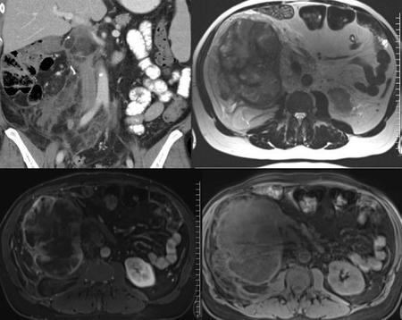
ARenal cell carcinoma(9%)
BRenal angiomyolipoma(13%)
CIntra-abdominal desmoid tumor(3%)
DLiposarcoma(74%)
ERetroperitoneal hematoma(1%)
Your answerD
Correct answerD. Liposarcoma
Explanation
Liposarcoma
Retroperitoneal liposarcoma should be suggested in the presence of a retroperitoneal mass with internal fat density, clearly seen on the CT (yellow arrows), with associated high T2 signal (blue arrow), as well as decreased signal on fat-saturated imaging (white arrow) with signal similar to other areas of macroscopic fat. Heterogeneous enhancement with thick septations are also noted within this mass. Depending on the degree of differentiation, the lesion may appear entirely fat density (well-differentiated) to almost entirely soft tissue density with multiple enhancing soft tissue foci and thick septations (de-differentiated). The degree of differentiation is often a marker for overall tumor behavior, with less well-differentiated tumors demonstrating more aggressive behavior. They may be encapsulated and displace adjacent organs or may invade neighboring organs.
Incorrect Answers:
A. Renal cell carcinoma could produce a large, exophytic enhancing mass in this case. However, if the lesion arises from the kidney, there is often a claw sign of normal renal parenchyma surrounding the lesion, which is not seen here.
B. Renal angiomyolipomas can become quite large and have characteristic internal fat signals, as seen in these images. However, the degree of soft tissue expansion and compression of the kidney seen in this case favors liposarcoma. Again, if the diagnosis were angiomyolipoma, a claw sign would be expected.
C. Intra-abdominal desmoid tumors can be seen in the setting of certain hereditary conditions which favor desmoid development, such as Gardner syndrome, which is a variant of familial colorectal polyposis (FAP) syndrome. They may also form primarily, often in response to some trauma or after abdominal surgery. They do not typically demonstrate prominent internal fat, however, as is seen in this case. Though desmoid could be considered in this case, a more probable diagnosis should be offered.
E. Retroperitoneal hematoma may be on the differential for this appearance. However, frequently there is a layering appearance of the material due to hematocrit effect and varying intensity on MRI related to age of hemorrhage, with T1 isointense and T2 iso- hyperintense material in the hyperacute phase, T1 isointense and T2 hypointense material in the acute phase, and T1 hypointense and T2 hypointense material in the chronic phase. Further, hemorrhage will not enhance.
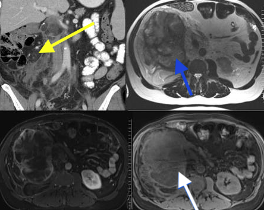
Q2
QID 61981
Correct
A 30-year old male presents to the emergency department after a physical altercation. What is the most likely diagnosis?
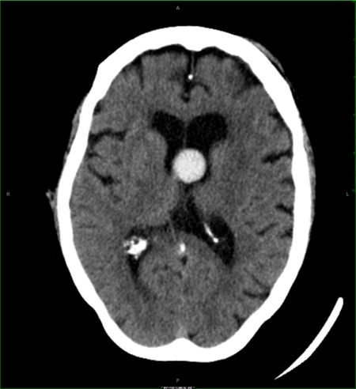
AChoroid plexus papilloma(3%)
BCavernous malformation(0%)
CColloid cyst(96%)
DIntraventricular hemorrhage(0%)
Your answerC
Correct answerC. Colloid cyst
Explanation
Colloid cyst
A colloid cyst is a rare benign lesion arising within the third ventricle. Accounting for 0.5-1% of primary brain tumors, a colloid cyst usually forms by the third or fourth decade of life. Typically, colloid cysts are clinically silent, but chronic headaches are the most common complaint when a patient is symptomatic. Although a colloid cyst is histologically benign, it can cause obstructive hydrocephalus, herniation, and sudden death.
The axial image from a nonenhanced CT demonstrates a hyperdense mass (red arrow) arising from the third ventricle, between the foramen of Monro. Colloid cysts classically appear hyperdense on CT secondary to the intrinsic mucin content.
Incorrect Answers:
A. Choroid plexus papilloma classically present as a cauliflower-like mass in the atrium of the lateral ventricle in children.
B. Cavernous malformation is a benign vascular tumor that typically occurs in the brain parenchyma.
D. Acute intraventricular hemorrhage typically appears hyperdense on CT imaging. The well-circumscribed borders in this case favor a more specific diagnosis of an underlying mass. A colloid cyst can bleed, however this is a rare event.
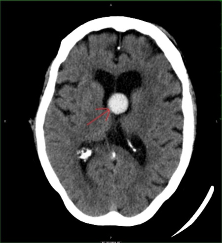
Q3
hard QID 43886
Correct
Which of the following is the most likely diagnosis in this 5-year-old male patient with several month histories of lateral-sided ankle pain?
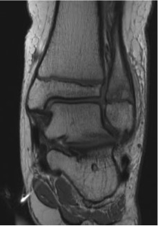
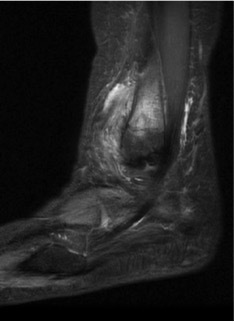
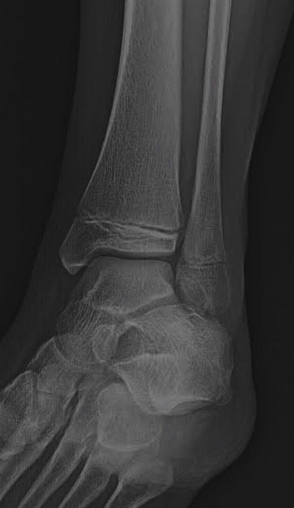
AOsteoid osteoma(15%)
BAcute osteomyelitis(11%)
CBrodie abscess(70%)
DPrimary osseous lymphoma(1%)
EEwing sarcoma(3%)
Your answerC
Correct answerC. Brodie abscess
Explanation
Brodie abscess
The radiograph shows a round, well-circumscribed lytic lesion in the distal fibular metaphysis (red arrows). The corresponding proton density and fat-saturated T2 MR images show this high-signal metaphyseal lesion (red arrows) along with adjacent marrow edema (blue arrow), periosteal reaction (green arrow), and extensive surrounding soft tissue edema (orange arrow). Pertinent negatives are the absence of a soft tissue mass or cortical erosion/ destruction. Given these features, of the listed answer choices, a Brodie abscess (subacute osteomyelitis with single focus of interosseous abscess formation) is the most likely diagnosis. Subacute osteomyelitis is difficult to diagnose because the characteristic signs and symptoms of the acute form of the disease are absent. The disease has an insidious onset, mild symptoms, and lacks a systemic reaction, and supportive laboratory data are inconsistent.
Incorrect Answers:
A. Most often osteoid osteoma appears as a cortically-based, lucent lesion (central nidus) with surrounding sclerosis, cortical thickening, periosteal reaction, and extensive surrounding marrow and soft tissue edema.
B. Acute osteomyelitis has a more aggressive appearance, often with a more ill-defined or permeative pattern of osseous destruction, including cortical erosion. Other imaging features seen in this case, such as periosteal reaction and edema, may be seen in acute osteomyelitis, however.
D. Primary osseous lymphoma is incorrect. The radiographic appearance is often one of extensive bone involvement, with a permeative and destructive appearance. However, it may be quite subtle at times, with a wide zone of transition and no true matrix. The MR appearance would have a similar infiltrative pattern of signal replacement, often with low signal on PD/ T1 weighted images. None of these features are present in this case.
E. Ewing sarcoma would be expected to have much more aggressive features, with a permeative, moth-eaten appearance, as well as a large soft tissue component.
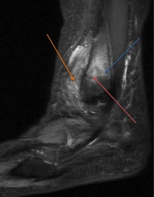
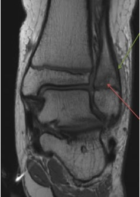
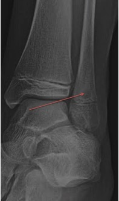
Q4
easy QID 2845
Correct
Which of the following is the most likely diagnosis?
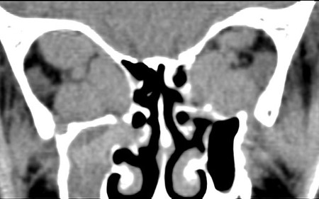
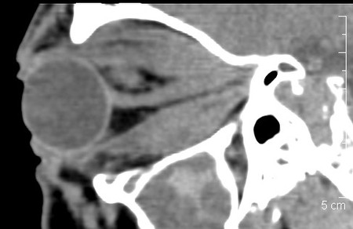
AInflammatory pseudotumor(4%)
BPostseptal cellulitis(3%)
CGraves’ ophthalmopathy(92%)
DOptic neuritis(0%)
ELymphoma(1%)
Your answerC
Correct answerC. Graves’ ophthalmopathy
Explanation
Graves’ ophthalmopathy
The imaging findings are characteristic of Graves’ ophthalmopathy. Enlargement of the extraocular muscles usually proceeds in order of inferior, medial, superior, and lateral rectus muscles. As in this case, the sparing of the lateral rectus is highly suggestive. Graves’ also classically spares the tendinous insertion as opposed to pseudotumor.
Incorrect Answers:
A. The imaging findings are characteristic of Graves’ ophthalmopathy. Pseudotumor typically affects the tendinous insertion, as opposed to Graves’. The sparing of the lateral rectus is highly suggestive as muscular involvement in Graves’ tends to proceed in the order of inferior, medial, superior, and lateral rectus muscles.
B. The imaging findings are characteristic of Graves’ ophthalmopathy. There is enlargement of the inferior, medial, and superior rectus muscles with sparing of the lateral rectus. There is no significant inflammatory change within the orbital fat or other orbital structures, which is not typical of infection.
D. Optic neuritis involves the optic nerve. In this case, the abnormality is enlargement of the inferior, medial, and superior rectus muscles.
E. The bilaterality and sparing of the lateral rectus muscles is typical of Graves’ ophthalmopathy. Isolated involvement of the ocular muscles is not a feature of lymphoma.
Q5
easy QID 37631
Correct
A 71-year-old female patient with restlessness and heat intolerance is referred to an endocrinologist. Their thyroid gland is markedly enlarged on physical exam. The endocrinologist orders a thyroid scan which is pictured below. What is the diagnosis?
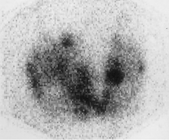
AToxic autonomous nodule(2%)
BToxic multinodular goiter(95%)
CMetastatic thyroid cancer(0%)
DGraves’ disease(2%)
ESubacute thyroiditis(1%)
Your answerB
Correct answerB. Toxic multinodular goiter
Explanation
Toxic multinodular goiter
The I-123 thyroid scan demonstrates multiple nodular areas, both cold (blue arrows) and hot (red arrows), resulting in an overall heterogeneous appearance. The findings are indicative of toxic multinodular goiter, nodular enlargement of the thyroid gland in which several of these nodules gradually form areas of hyperplasia that eventually become autonomously functioning, leading to hyperthyroidism. This is also known as Plummer disease.
Incorrect Answers:
A. Toxic autonomous nodule, also referred to as toxic adenoma, refers to hyperthyroidism caused by a single hyperfunctioning nodule in the thyroid acting independently of the normal pituitary-thyroid control mechanism. This would present as a single focus of I-123 uptake on thyroid scan.
C. Metastatic thyroid cancer is often evaluated with whole-body I-131 (not I-123) imaging. Further, it does not frequently present with signs of hyperthyroidism, and when it does, the diagnosis has typically already been established. The appearance of the thyroid is variable in cases of thyroid cancer. Most frequently it is seen as cold nodules, less so as multinodular goiter, and even less so as uniformly increased uptake. Further, multifocal extra-glandular sites of increased thyroid uptake would be seen at sites of metastatic disease (commonly the lungs and bones).
D. Graves’ disease is an autoimmune disorder caused by antibodies against the thyrotropin (TSH) receptors on the cell surface of the thyroid follicle. By mimicking TSH, the thyroid receptor antibodies excessively stimulate the thyroid cells, which in turn increase thyroid hormone production with its associated sequelae. This appears as diffuse and symmetrically increased gland uptake on a thyroid scan.
E. Subacute thyroiditis is a thyrotoxic condition characterized by neck pain, fever, and a tender diffuse goiter, which classically follows an upper respiratory infection. A post-viral inflammatory response leads to giant cell infiltration into the thyroid follicles, ultimately resulting in follicular swelling and disruption with release of stored thyroid hormone into the circulation. The radioactive iodine uptake is very low since the affected thyroid is unable to transport or organify iodine.
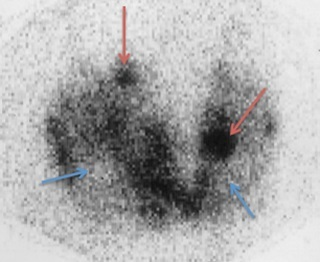
Q6
QID 20792
Correct
Which of the following is the most likely etiology for the appearance of this 57-year-old female patient’s spine?
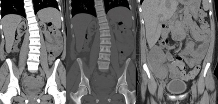
ARenal osteodystrophy(92%)
BMyelofibrosis(3%)
COsteopetrosis(2%)
DPaget’s disease(1%)
EPrior radiation treatment(2%)
Your answerA
Correct answerA. Renal osteodystrophy
Explanation
Renal osteodystrophy
Three coronal CT scans through the abdomen and pelvis show diffuse bony sclerosis. Note how there is increased density at the endplates, which are not clearly demarcated from the medullary cavity (blue arrows). Additionally, there is a transplanted kidney in the right pelvis (yellow arrow) and bilaterally atrophic native kidneys (green arrows). The unifying diagnosis is renal osteodystrophy.
Incorrect Answers:
B. Myelofibrosis can produce a similar appearance but given the absence of splenomegaly and the renal findings, this is not the best answer.
C. The bones in osteopetrosis are very dense, and there is typically a more clearly demarcated appearance of the endplates with a bone in bone appearance.
D. Paget’s disease is typically not this diffuse. Additionally, bone enlargement should be seen, with the affected vertebral body being noticeably larger than the adjacent unaffected bones, giving rise to the so-called picture frame appearance.
E. Radiation treatment will cause marrow reconversion from red to yellow, which will not be appreciated without MR. Additionally, marrow reconversion will be confined to a geographic radiation port.
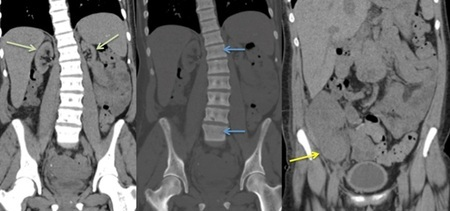
Q7
easy QID 55974
Correct
A 41-year-old diabetic female patient presents with fever, right flank pain, and leukocytosis. Which of the following is the next best step in management?
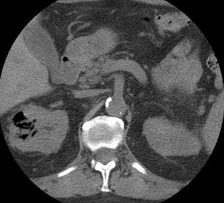
AExploratory laparotomy for ischemic bowel(1%)
BTherapeutic colonic enema(0%)
CUrology consultation(98%)
DCorrelation with prior surgical history for retained foreign body(1%)
Your answerC
Correct answerC. Urology consultation
Vital Concept
Emphysematous pyelonephritis on CT shows gas within the renal parenchyma, typically affects diabetic and immunocompromised patients, and requires emergent treatment.
Explanation
Urology consultation
CT confirms extensive gas within the right renal parenchyma and surrounding perirenal space. Given the life-threatening nature of this condition, urgent surgical consultation is warranted with concurrent aggressive hydration and IV antibiotics. E. coli is the most common causative organism, but cases may be polymicrobial. CT is the ideal diagnostic modality. However, radiographs and ultrasound are often preliminarily obtained and can provide insight.
Huang and Tseng devised an imaging classification as follows:
• Class 1: Gas only within the collecting system (emphysematous pyelitis)
• Class 2: Gas limited to the renal parenchyma
• Class 3A: Gas/abscess in the perinephric space
• Class 3B: Gas/abscess in the pararenal space
• Class 4: Bilateral emphysematous pyelonephritis
Incorrect Answers:
A. Reniform shape of the gas collection in the right abdomen is most consistent with emphysematous pyelonephritis rather than ischemic bowel.
B. Therapeutic enema would be indicated in the infant population in the setting of an intussusception. Although this abnormality would manifest in a similar location, the radiographic finding would demonstrate a claw sign.
D. Although reaction to a retained foreign body (gossypiboma) can show a somewhat spongiform gaseous pattern, the location and reniform shape is classic for emphysematous pyelonephritis.
Vital Concept: Emphysematous pyelonephritis on CT shows gas within the renal parenchyma, typically affects diabetic and immunocompromised patients, and requires emergent treatment.
Q8
hard QID 39255
Correct
Which of the following statements is true regarding the class of anomalies to which the below lesion belongs?
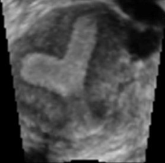
AThere is no increased risk of pregnancy loss.(8%)
BRenal imaging is unnecessary.(6%)
CEvaluation of the internal (not external) uterine contour is key to the diagnosis.(6%)
DThey result from anomalies of Müllerian duct development during embryogenesis.(79%)
EComputed tomography (CT) is a mainstay of diagnosis.(1%)
Your answerD
Correct answerD. They result from anomalies of Müllerian duct development during embryogenesis.
Explanation
They result from anomalies of Müllerian duct development during embryogenesis.
The image demonstrates a cleft at the fundus (yellow arrow) with the same echotexture as the surrounding myometrium, which does not deform the fundal contour (purple arrow), and partially divides the endometrium (blue arrows).
This is a diagnostic of a sub-septate uterus, which is an example of a broad category of congenital anomalies known as Müllerian duct anomalies (MDAs). They result from disruption of Müllerian duct development during embryogenesis.
Incorrect Answers:
A. B. Diagnosis of MDA is clinically important because of the high associated risk of infertility, endometriosis, and miscarriage, such that an estimated 15% of women who experience recurrent miscarriages are reported to have MDAs. MDAs are also commonly associated with renal anomalies, with a reported prevalence of 30%–50%, including renal agenesis (most commonly unilateral agenesis), ectopia, hypoplasia, fusion, malrotation, and duplication.
C. Imaging plays an essential role in MDA diagnosis and treatment planning. Currently, magnetic resonance (MR) imaging is the preferred means of evaluation. However, selection of the initial imaging modality is often dictated by the presenting clinical scenario (e.g., primary amenorrhea, pelvic pain, or infertility).
Hysterosalpingography (HSG) is routinely used in an initial evaluation of infertility. It allows assessment of the uterine cavity and fallopian tube patency but does not provide any information about the external uterine contour, which is key to making the correct diagnosis. In younger patients or acute cases, ultrasonography (US) is the preferred method because it is readily available, inexpensive, rapid, and does not use ionizing radiation. Field-of-view restrictions with the ultrasound (US), patient body habitus, and artifact from bowel gas may result in a request for further imaging with MR imaging.
E. Computed tomography (CT) is not utilized in the evaluation of MDAs.
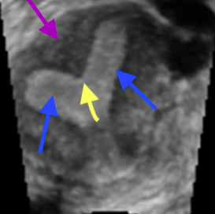
Q9
easy QID 55990
Correct
These images are taken from a 45-year-old male patient with two months of right lower quadrant pain. Which of the following is the most likely diagnosis?
Appendiceal mucocele appears as distended tubular appendix with T2 hyperintense mucin content and minimal surrounding inflammation, can mimic ovarian masses in women.
Explanation
Low-grade appendiceal mucinous neoplasm
Low-grade appendiceal mucinous neoplasms often present with an abnormal accumulation of mucin causing abnormal distention of the vermiform appendix with a relative paucity of adjacent inflammation.
Recent updates have been made regarding the naming of these and similar lesions. The American Joint Committee on Cancer Staging adopted terminology from the Peritoneal Surface Oncology Group International to denote these lesions in 2021, in ascending order of severity:
Low-grade appendiceal mucinous neoplasm (LAMN)
High-grade appendiceal mucinous neoplasm (HAMN)
Mucinous adenocarcinoma
Incorrect Answers:
A. This can mimic a cystic mass. However, a key component is the history, which typically involves more acute right lower quadrant pain, fever, and elevated WBC. Inflammatory appearance with surrounding fat-stranding and free fluid is typical, which are not present in this case.
C. Adenocarcinomas in this region are typically large at presentation, often with transmural invasion, pericolonic adenopathy, and metastatic disease. A solid enhancing irregular mass in the same location would better represent this possibility.
D. Typically an apple-core type lesion, not usually exophytic like this lesion.
Vital Concept: Appendiceal mucocele appears as distended tubular appendix with T2 hyperintense mucin content and minimal surrounding inflammation, can mimic ovarian masses in women.
Q10
QID 18103
Correct
The surface radiation level of this package should not exceed which of the following?
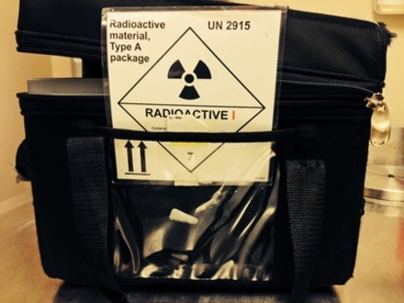
A0.5 mrem/hr(82%)
B5 mrem/hr(13%)
C50 mrem/hr(5%)
D500 mrem/hr(0%)
Your answerA
Correct answerA. 0.5 mrem/hr
Explanation
0.5 mrem/hr
Radioactive label type I should have a surface radiation level that does not exceed 0.5 mrem/hr and should have no detectable radiation at 1 meter.
Incorrect Answers:
B. This number doesn’t apply to any radioactive label.
C. Radioactive label type II packages should have a surface radiation level that doesn’t exceed 50 mrem/hr and should have radiation level at 1meter that should not exceed 1 mrem/hr. Any levels higher than that should be marked radioactive label type III.
D. This number doesn’t apply to any radioactive label.
Q11
moderate QID 47076
Correct
A 45-year-old female patient undergoes an abdominal computed tomography (CT) scan because of right upper quadrant pain. Which of the following is the most likely diagnosis?
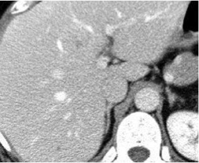
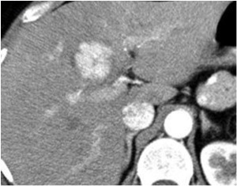
AHepatic adenoma(9%)
BFocal nodular hyperplasia(84%)
CHepatocellular carcinoma(2%)
DFibrolamellar hepatocellular carcinoma(5%)
Your answerB
Correct answerB. Focal nodular hyperplasia
Vital Concept
Focal nodular hyperplasia shows characteristic homogeneous arterial phase hyperenhancement with central scar hypoenhancement, followed by isointensity in portal venous phase and delayed central scar enhancement - no washout distinguishes it from malignancy.
Explanation
Focal nodular hyperplasia
Focal nodular hyperplasia is often referred to as the stealth lesion. It appears isodense or hypodense to normal liver on non-contrast exams. There is transient, intense, homogeneous arterial phase enhancement (red arrow), which on the portal venous phase is isodense to background liver (blue arrow). A unique feature is a central scar (green arrows).
Incorrect Answers:
A. Hepatic adenomas are rare benign hepatic neoplasms most frequently seen in the setting of use of hormonally active drugs and medications, including oral contraceptives and anabolic steroids. Their CT appearance depends on the subtype. Encapsulation is seen in approximately 20% of cases, best appreciated in the delayed phase. Intratumoral hemorrhage and lipids are also common.
C. Hepatocellular carcinoma is characterized by a heterogeneous mass with arterial hyperenhancement with subsequent washout on delayed imaging. Intratumoral hemorrhage and lipids are frequently present. They are often seen in the setting of background liver cirrhosis.
D. Fibrolamellar hepatocellular carcinoma is a rare malignancy seen in young adults, as opposed to the typical HCC that is present in cirrhosis. They most often appear on CT as a heterogeneous mass with a well-defined contour and hypoenhancing central scar. The scar less often enhances compared to FNH. Further nodal metastases are frequently present (greater than 50% of cases).
Vital Concept: Focal nodular hyperplasia shows characteristic homogeneous arterial phase hyperenhancement with central scar hypoenhancement, followed by isointensity in portal venous phase and delayed central scar enhancement - no washout distinguishes it from malignancy.
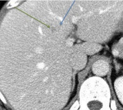
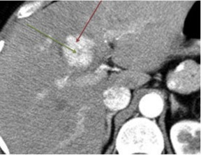
Q12
hard QID 2892
Correct
Which of the following dose calibrator tests is commonly performed with a 137Cs source?
AIntrinsic uniformity(13%)
BExtrinsic uniformity(14%)
CGeometry(5%)
DLinearity(10%)
EConstancy(58%)
Your answerE
Correct answerE. Constancy
Vital Concept
Cs-137's 30-year half-life makes daily decay corrections unnecessary, allowing pure assessment of dose calibrator stability rather than source decay—the fundamental requirement for detecting instrument drift in daily constancy testing.
Explanation
Constancy
Constancy measures the day-to-day reliability of the dose calibrator. A known activity of radionuclide with a very long half-life is placed in the calibrator daily. The values should not significantly vary from day to day (±5%). 137Cs is a good candidate because it has a 30-year half-life and does not significantly vary from day to day.
Incorrect Answers:
A. Intrinsic uniformity is not a dose calibrator test, but a gamma camera test.
B. Extrinsic uniformity is not a dose calibrator test, but a gamma camera test.
C. Geometry determines the ability of the instrument to accurately measure activities in different spatial configurations (i.e., a different size syringe, vial, or pill). Serial dilutions of known activity of radionuclide are measured in a syringe and recorded. The activity should not significantly change across volumes (±5%). This is usually performed with 99mTc.
D. Linearity refers to the ability to accurately measure a range of activity from high to low dose. This is typically done by monitoring the activity of a given amount of radionuclide over time and comparing it to the expected decay rate (±5%). This is typically done with 99mTc. You would not want to use 137Cs due to the very long half-life.
Vital Concept: Cs-137's 30-year half-life makes daily decay corrections unnecessary, allowing pure assessment of dose calibrator stability rather than source decay—the fundamental requirement for detecting instrument drift in daily constancy testing.
Q13
hard QID 4935
Incorrect
An 85-year-old female presents for routine annual screening mammography. There are calcifications noted within the left breast that have slowly increased over the last several years. A partially zoomed-in digital craniocaudal (CC) mammographic view of the left breast is shown below. Which of the following is the most appropriate diagnosis, assuming this is a diffuse process?
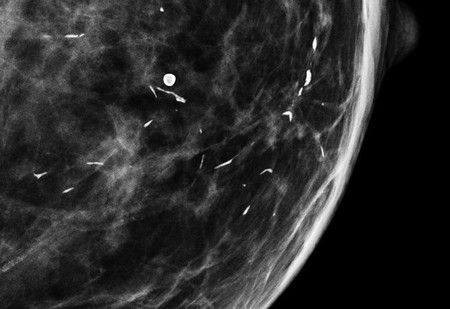
ADuctal carcinoma in situ (DCIS)(3%)
BMilk of calcium(6%)
CVascular calcifications(17%)
DPlasma cell mastitis(71%)
ESkin calcifications(4%)
Your answerC
Correct answerD. Plasma cell mastitis
Vital Concept
Plasma cell mastitis appears as smooth, thick rod-shaped calcifications in a ductal distribution and is benign. However, radiologists must carefully evaluate the entire breast for coexistent malignancy, as ductal carcinoma in situ can occur alongside these benign secretory calcifications.
Explanation
Plasma cell mastitis
The mammographic image demonstrates typical calcifications of plasma cell mastitis, which may also be referred to as "secretory disease," a condition in which inspissated secretions calcify within ectatic ducts. Calcifications are rod-like, occasionally branching, and follow a ductal distribution.
Incorrect Answers:
A. Calcifications of ductal cell carcinoma in situ (DCIS) are typically smaller and pleomorphic, unlike the larger more rod-like calcifications seen here.
B. Milk of calcium refers to layering calcium within cysts, which appear linear on the mediolateral (ML) view and "smudgy" on the CC view.
C. Typically described as having a "tram-track" appearance, faint vascular calcifications can be seen here but are not the predominating finding.
Tangential mammographic views were traditionally done on 2D mammograms to localize calcifications to the skin surface, however more recent technology with tomosynthesis has generally made this obsolete.
Vital Concept: Plasma cell mastitis appears as smooth, thick rod-shaped calcifications in a ductal distribution and is benign. However, radiologists must carefully evaluate the entire breast for coexistent malignancy, as ductal carcinoma in situ can occur alongside these benign secretory calcifications.
Q14
easy QID 38052
Correct
A provider is in the emergency department reading an abdominal CT with unexpected free intraperitoneal air. Which of the following is the appropriate method of communication according to the Joint Commission?
AStating the finding in the report is sufficient(0%)
BEmail to ordering provider or their representative within 30 to 60 minutes.(0%)
CA face-to-face conversation with ordering provider or their representative within 120 minutes.(0%)
DA phone call with ordering provider or their representative within 30 to 60 minutes.(100%)
EA text page to ordering provider or their representative within 120 minutes.(0%)
Your answerD
Correct answerD. A phone call with ordering provider or their representative within 30 to 60 minutes.
Vital Concept
For all "critical" results, Level 1 communication is mandated and audited. Such communication requires direct contact (not electronic contact) between the radiologist and the requesting or responding clinician or another licensed health care provider responsible for that patient’s care within 30 to 60 minutes.
Explanation
A phone call with ordering provider or their representative within 30 to 60 minutes.
Explanation:
The Joint Commission requires that radiologists identify certain imaging results as "critical." Each facility has leeway to define its own Critical Tests and Critical Results; there is no standard list for either category. Critical results are defined as “any result or finding that may be considered life-threatening or that could result in severe morbidity and require urgent or emergent clinical attention.
In this case, free intraperitoneal air is an unexpected finding that is considered a “critical result.” For all "critical" results, communication is mandated and audited. Such communication requires contact between the radiologist and the requesting or responding clinician or another licensed health care provider responsible for that patient’s care. This communication must occur within 30-60 minutes (not 120 minutes) of the time that the observation is made and must be documented. When the ordering physician/ health care provider cannot be contacted expeditiously, it may be appropriate to convey results directly to the patient, depending upon the nature of the imaging findings.
Incorrect Answers:
A.B.C. E.
For all "critical" results, Level 1 communication is mandated and audited. Such communication requires direct contact (not electronic contact) between the radiologist and the requesting or responding clinician or another licensed health care provider responsible for that patient’s care.
Vital Concept: For all "critical" results, Level 1 communication is mandated and audited. Such communication requires direct contact (not electronic contact) between the radiologist and the requesting or responding clinician or another licensed health care provider responsible for that patient’s care within 30 to 60 minutes.
Q15
hard QID 2697
Correct
Which of the following is true regarding medullary carcinoma of the breast?
AHas a poorer prognosis than invasive breast carcinoma of no special type(14%)
BOn mammography, appears as a mass with circumscribed margins(73%)
CIs typically ER and PR positive(7%)
DTypically associated with calcifications(6%)
Your answerB
Correct answerB. On mammography, appears as a mass with circumscribed margins
Vital Concept
Medullary breast carcinoma is typically seen as a circular/oval type mass lesion with ill-defined or circumscribed margins at mammography. There can be varying degrees of lobulation while calcification is usually not a feature.
Explanation
On mammography, appears as a mass with circumscribed margins
Additionally, medullary carcinoma of the breast is generally non-calcified and can also be seen with indistinct margins at mammography.
Incorrect Answers:
A. They have better prognosis than invasive breast carcinoma of no special type.
C. Most medullary carcinomas tend to be estrogen-progesterone receptor negative.
D. Calcification is uncommon.
Vital Concept: Medullary breast carcinoma is typically seen as a circular/oval type mass lesion with ill-defined or circumscribed margins at mammography. There can be varying degrees of lobulation while calcification is usually not a feature.
Q16
easy QID 20932
Correct
A 32-year-old female patient with medical treatment-resistant hypertension obtains the angiogram given. Which of the following is the best initial therapy?
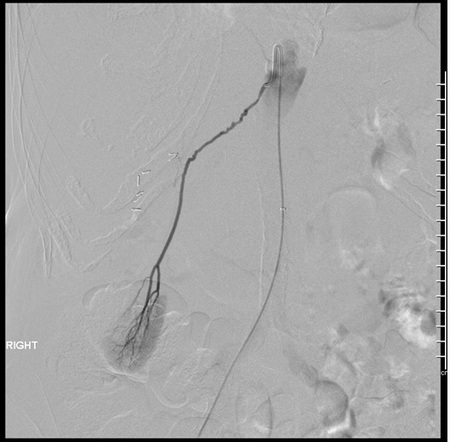
AAngioplasty alone(92%)
BAngioplasty and balloon-expandable stent(3%)
CAngioplasty and self-expanding stent(1%)
DAngioplasty and drug-eluting stent(0%)
ECoil embolization(2%)
Your answerA
Correct answerA. Angioplasty alone
Explanation
Angioplasty alone
In this case, a variant accessory right renal artery is shown. This demonstrates a beaded angiographic appearance (red arrows), consistent with fibromuscular dysplasia (FMD). There are multiple types of FMD, which affect differing histologic layers of the vascular wall, but the most common type is medial fibroplasia, affecting the tunica media and producing the "string of beads" appearance. The angiographic treatment of choice is angioplasty without stenting, especially in initial therapy. Subsequent therapies could include stenting in resistant cases, but the initial therapy should be balloon angioplasty without stent.
Incorrect Answers:
B, C, and D. These are not a good choice, as primary stent placement of any kind would not be preferred for treatment of FMD.
E. Coil embolization would not be a wise choice because, at best, it would worsen hypertension, and at worst, could lead to renal infarction.
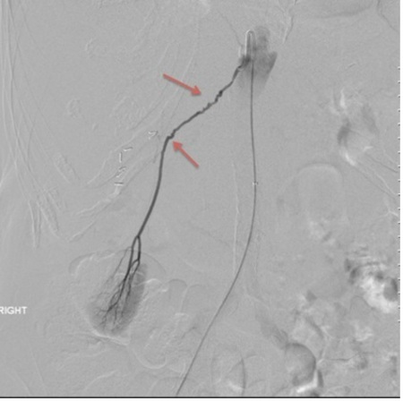
Q17
QID 3019
Correct
Which of the following is correct about this ultrasound image of the female pelvis?
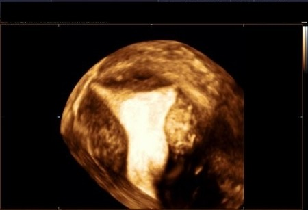
A3D image of normal uterus(12%)
B3D image of septate uterus(2%)
C3D image of bicornuate uterus(3%)
D3D image of fibroid of uterus(7%)
E3D image of arcuate uterus(76%)
Your answerE
Correct answerE. 3D image of arcuate uterus
Vital Concept
An arcuate uterus has an endometrium indentation <1 cm at the uterine fundus.
Explanation
3D image of arcuate uterus
An arcuate uterus has an endometrium indentation at the uterine fundus. This is because there is incomplete resorption of the uterovaginal septum. One can see on the 3D ultrasound a uterus with smooth, mild indentation of the fundal endometrial canal, compatible with arcuate uterus.
Incorrect Answers:
A. There is a congenital anomaly in the morphology of the uterus in the image; this is not a normal uterus.
B. This is not a 3D image of septate uterus, there is no septum is visible in these images.
C. There is no evidence to suggest a bicornuate uterus.
D. No evidence of uterine mass lesions seen.
Vital Concept: An arcuate uterus has an endometrium indentation <1 cm at the uterine fundus.
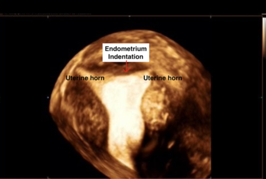
Q18
easy QID 56315
Correct
Which of the following is considered a radioactive spill by the Nuclear Regulatory Commission (NRC)?
A1.5 millicuries iodine-131(89%)
B100 microcuries iodine-131(7%)
C50 millicuries thallium-201(3%)
D50 millicuries Tc-99m(1%)
Your answerA
Correct answerA. 1.5 millicuries iodine-131
Explanation
1.5 millicuries iodine-131
The Nuclear Regulatory Commission defines minor and major radioactive spills in Appendix N of the NUREG publication. Major spills should be reported to the NRC based on 10 CFR 30.50 criteria. The radiation safety officer should be contacted immediately and direct cleanup activities. A root cause analysis should be also be performed and any possible corrective actions taken.
Incorrect Answers:
B. > 1 millicurie iodine-131 is considered a major spill.
C. > 100 millicuries of thallium-201 is considered a major spill.
D. > 100 millicuries technetium-99m is considered a major spill.
Q19
easy QID 83600
Correct
A 27-year-old with a recent history of meningitis presents to the Emergency Department with headache and somnolence that have worsened over several days. The patient denies other systemic symptoms. Vital signs are normal. There are no focal findings on neurological examination. A non-contrast cranial computed tomography (CT) scan reveals enlargement of the lateral, third, and fourth ventricles. What is causing the hydrocephalus?
AImpaired CSF absorption at the arachnoid granulations(88%)
BOverproduction of CSF from the choroid plexus(2%)
CObstruction of the cerebral aqueduct (aqueduct of Sylvius)(8%)
DColloid cyst formation obstructing the foramen of Monro(2%)
Your answerA
Correct answerA. Impaired CSF absorption at the arachnoid granulations
Vital Concept
One known complication of meningitis is hydrocephalus, which results from impaired CSF absorption by the arachnoid granulations.
Explanation
Impaired CSF absorption at the arachnoid granulations
This patient has secondary hydrocephalus due to recent community-acquired meningitis. Five percent of meningitis cases are complicated by communicating hydrocephalus due to impaired CSF absorption by the arachnoid granulations. A posited etiology of idiopathic normal pressure hydrocephalus also involves thickening of the arachnoid granulations, leading to impaired CSF drainage. Obstructive (or "non-communicating") and communicating hydrocephalus are distinguished by whether CSF can flow through the ventricular system. Hydrocephalus associated with meningitis has a poor prognosis with a high mortality rate, even with shunting.
Incorrect Answers:
B. Overproduction of CSF can occur with a choroid plexus tumor. This is an uncommon cause of communicating hydrocephalus.
C. Obstruction of the cerebral aqueduct, which connects the third and fourth ventricles, would result in enlargement of the lateral and third ventricles. Obstruction of the foramina of Luschka or the foramen of Magendie would result in enlargement of the fourth ventricle, as these foramina connect the fourth ventricle to the cerebellopontine angle cistern and the cisterna magna, respectively.
D. When located in the third ventricle, colloid cysts can lead to acute hydrocephalus. They are not a result of meningitis.
Vital Concept: One known complication of meningitis is hydrocephalus, which results from impaired CSF absorption by the arachnoid granulations.
Q20
moderate QID 22589
Incorrect
A 16-month-old female patient presents with worsening headaches, vomiting, and increasing head circumference. Which of the following is the most likely diagnosis?
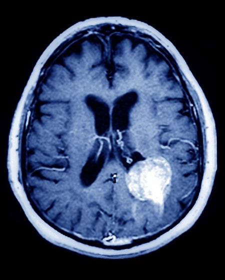
AGlioblastoma multiforme (GBM)(1%)
BAtypical teratoid-rhabdoid tumor (ATRT)(8%)
CChoroid plexus papilloma/carcinoma(83%)
DSubependymal giant cell astrocytoma(6%)
EEmbryonal tumor with abundant neuropil and true rosettes (ETANTR)(3%)
Imaging differentiation between choroid plexus papilloma and carcinoma is difficult, requiring histologic confirmation. Carcinomas show parenchymal invasion with peritumoral edema while papillomas remain intraventricular. Extensive parenchymal invasion suggests malignancy.
Explanation
Choroid plexus papilloma/carcinoma
Choroid plexus papillomas are World Health Organization (WHO) grade I neoplasms arising from choroid plexus epithelial cells. Frequently they are intraventricular in location and markedly enhancing with lobulated/"frond-like" margins. They are usually isodense or hyperdense to cerebral tissue and may have calcifications.
On magnetic resonance (MR) imaging, they are iso- to hypointense on T1WI and iso- to hyperintense on T2WI with marked enhancement on post-contrast imaging. They are frequently associated with hydrocephalus. They are most commonly located at the atrium of the lateral ventricles (about 50%), with about 40% within the fourth ventricle, and a much smaller proportion in the roof of the third ventricle.
Choroid plexus papillomas are notoriously difficult to distinguish from choroid plexus carcinomas on imaging, such that they are often followed over long periods of time for evidence of invasion. Often, definitive diagnosis may only be made on pathologic analysis. Heterogeneity of enhancement and increasing edema along the adjacent brain parenchyma may be the only imaging features to suggest invasive choroid plexus carcinoma. However, these are inconsistent at best. In this case, however, the marked amount of signal abnormality in the adjacent brain parenchyma is highly suggestive of malignancy.
Incorrect Answers:
A. Glioblastoma multiforme (GBM) is a WHO grade IV malignant tumor composed of astrocytes and is the most common intracranial neoplasm in adult patients. It is characterized by a thick enhancing periphery of the tumor mass with internal necrosis. Surrounding edema represents infiltrative tumor extension. Frequently, they cross the midline via the corpus callosum (“butterfly glioma”). In children, GBM more frequently involves posterior fossa structures and the brainstem.
B. Atypical teratoid-rhabdoid tumors (ATRT) are WHO grade IV highly aggressive tumors occurring in young pediatric patients. They are composed of rhabdoid cells and neuroectodermal cells that may differentiate into neuronal, glial, epithelial, or mesenchymal cells. They are best characterized as large, heterogeneous masses in infants that are hyperattenuating on CT and may have internal calcification. They are heterogeneous on T1- and T2-weighted imaging, with internal hemorrhage common. They characteristically enhance heterogeneously. Often there is a relatively small amount of edema for the typically overall large size of the tumor. They commonly demonstrate subarachnoid seeding and leptomeningeal spread. As such, the entire neuraxis should be imaged prior to resection. Roughly half of these tumors are infratentorial, while about 40% are supratentorial, with the other 10% spanning both supratentorial and infratentorial sites.
D. Subependymal giant cell astrocytoma (SEGA) tumors are WHO grade I tumors arising in the subependymal regions of patients with tuberous sclerosis. They are lobular slow-growing tumors arising near the foramen of Monro and typically demonstrate marked enhancement. They are typically curable with complete resection. In patients in which SEGA is suspected, look for other signs of tuberous sclerosis, such as subependymal nodules and cortical tubers.
E. ETANTR is a subtype of previously called supratentorial primitive neuroectodermal tumors (PNET). They typically appear as large, heterogeneously enhancing hemispheric masses with restricted diffusion and minimal surrounding edema in a young pediatric patient. ETANTRs are WHO grade IV tumors consisting of undifferentiated neuroepithelial cells. Hemispheric ETANTRs tend to be large, while suprasellar and pineal ETANTRs tend to be smaller. They characteristically have a small amount of edema relative to their large size. They are prone to subarachnoid seeding, and as such, the entire neuraxis should be imaged before surgical resection. The intraventricular location of this tumor is less characteristic of supratentorial ETANTR.
Vital Concept: Imaging differentiation between choroid plexus papilloma and carcinoma is difficult, requiring histologic confirmation. Carcinomas show parenchymal invasion with peritumoral edema while papillomas remain intraventricular. Extensive parenchymal invasion suggests malignancy.
Q21
hard QID 24483
Incorrect
A patient undergoing a PET-CT is accidentally given the wrong dose of F-18 FDG, which exceeded the prescribed dose by 50%, resulting in a dose of 55 rem to an internal organ. Within which of the following time spans must the provider notify the Nuclear Regulatory Commission in writing?
A1 day(14%)
B7 days(12%)
C15 days(67%)
D30 days(7%)
E365 days(0%)
Your answerB
Correct answerC. 15 days
Vital Concept
A medical event requires reporting when a therapeutic administration deviates from the prescribed dose by ≥20% AND exceeds dose thresholds (0.05 Sv effective dose equivalent, 0.5 Sv to an organ/tissue, or 0.5 Sv shallow dose equivalent to skin). It also applies to wrong patient, wrong route, wrong radiopharmaceutical, wrong treatment mode, or leaking sealed source when dose thresholds are met. Notification requirements: NRC by phone within 1 calendar day, written report within 15 days, and referring physician and patient within 24 hours.
Explanation
15 days
Medical events require written notification to the NRC Regional Office within 15 days of discovery. The written report must include licensee information, event description, cause, effects, corrective actions, and patient notification certification, but must exclude patient identifying information. This follows the initial telephone notification requirement to NRC Operations Center by the next calendar day.
Incorrect Answers:
A. Telephone the NRC within 1 day
B. D.E. No communication due within these days
Vital Concept: A medical event requires reporting when a therapeutic administration deviates from the prescribed dose by ≥20% AND exceeds dose thresholds (0.05 Sv effective dose equivalent, 0.5 Sv to an organ/tissue, or 0.5 Sv shallow dose equivalent to skin). It also applies to wrong patient, wrong route, wrong radiopharmaceutical, wrong treatment mode, or leaking sealed source when dose thresholds are met. Notification requirements: NRC by phone within 1 calendar day, written report within 15 days, and referring physician and patient within 24 hours.
Q22
easy QID 39295
Correct
A junior resident realizes that a patient of another resident with suspicious findings on imaging has not had any follow-up or biopsy ordered, but the senior resident chastises the resident for wanting to interfere. As a result, the patient is eventually discharged without any follow-up. Which of the following situations is best exemplified by this case?
AAdverse drug event(0%)
BAdverse drug reaction(0%)
CAuthority gradient(99%)
DMistakes(1%)
EPotential adverse drug event(0%)
Your answerC
Correct answerC. Authority gradient
Explanation
Authority gradient
Authority gradient refers to the balance of decision-making power or the steepness of command hierarchy in a given situation. Teams with domineering members or leaders have steep authority gradients, in which it can be difficult for other members to provide valuable input. Teams with low authority gradients have a blurring of roles among team members, in which no clear decision can be made in a timely manner. Authority gradients undermine the safety culture.
Incorrect Answers:
A. Adverse drug events occur when patients receive injury from using medication that has been prescribed under the auspices of medical care. Adverse drug events are not necessarily errors or poor-quality care. Adverse drug events are undesirable clinical outcomes that result from medication administration.
B. Adverse drug reactions, also known as drug side effects, are effects that result from the use of medication in its recommended manner. Adverse drug reactions can range from minor inconveniences to serious, life-threatening conditions. Adverse drug reactions are differentiated from adverse drug events by being non-preventable.
D. Mistakes are failures that occur during behaviors that require conscious thought, analysis, and planning. Mistakes typically involve insufficient knowledge, failure to correctly interpret available information, or application of the wrong principles. Mistakes reflect a lack of experience or insufficient training and can be reduced with more training and supervision.
E. Potential adverse drug effects (ADEs) are medication errors that reached the patient but did not produce harm. Potential ADEs can refer to problems that, had they not been intercepted, would have caused harm to a patient.
Q23
moderate QID 20588
Correct
A 64-year-old female patient is presenting to the provider’s clinic for a follow-up of hand and wrist pain. The radiographs obtained are displayed below. Which of the following is the most likely diagnosis?
Bilateral frontal hand radiographs show a purely erosive arthritis symmetrically involving the more proximal hand joints: proximal interphalangeal joints and metacarpylphalangeal joints (MCPs) (green arrows), carpal bones (red arrow), and radiocarpal joints (yellow arrow). There is erosion of the ulnar styloids (more prominent on the left – blue arrow). There is ulnar subluxation of the second through fifth MCPs. Finally, there is periarticular osteopenia. This is textbook rheumatoid arthritis.
Incorrect Answers:
A. Calcium Pyrophosphate Deposition Disease (CPPD) characteristically produces chondrocalcinosis, MCP hooked osteophytes, and osteophytes in a similar manner as osteoarthritis but in a non-osteoarthritis pattern. For example, isolated patellofemoral osteoarthritis should point one to a diagnosis of CPPD.
B. Hemochromatosis produces hooked osteophytes in a manner similar to that of CPPD, but with more prevalent narrowing of the metacarpophalangeal spaces, including those of the fourth and fifth digits, and less prevalent separation of the scaphoid and lunate, when compared to CPPD.
D. Psoriatic arthritis produces asymmetric cartilage space narrowing with bony productive changes at the joints, and fluffy periostitis. Typically there is also soft tissue swelling (the sausage digit). These changes can lead to late findings of pencil-in-cup deformities and arthritis mutilans in the end-stage of the disease.
E. Osteoarthritis characteristically leads to osteophyte production in the setting of cartilage space narrowing. OA characteristically affects distal joints in the hands (DIP, PIP), producing Heberden’s and Bouchard’s nodules.
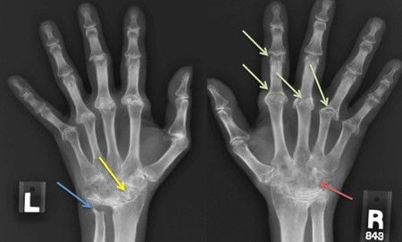
Q24
hard QID 44004
Correct
What is the diagnosis in this 26-year-old female with new-onset seizure?
The non-contrast CT shows a small volume of left occipital subarachnoid hemorrhage (red arrow). The venogram shows that this is secondary to an abnormal parenchymal tangle of vessels (yellow arrow), with an arterial feeder arising from the posterior circulation (orange arrow) and early venous drainage (blue arrow).
Incorrect Answers:
A. If one only had the non-contrast CT available, posterior circulation aneurysm would be a higher differential consideration, as non-traumatic subarachnoid hemorrhage is most often secondary to a rupture aneurysm. The unilateral and asymmetric location makes this less likely, however, and on the CTA, no aneurysm is present.
B. Dural arteriovenous fistula are rare and account for 10-15% of all cerebral vascular malformations. They may occur idiopathically or be secondary to trauma, prior craniotomy, or neovascularization induced by previously dural venous sinus thrombus. Angiographically one would expect to see abnormally enlarged and tortuous vessels in the subarachnoid space, corresponding to dilated cortical vein and enlarged feeder vessels arising from the meningeal arterial branches, which are not present in this case.
D. A developmental venous anomaly (DVA) represents a congenital malformation of veins which drain normal brain. DVAs rarely bleed. If large, the draining vein may be seen on non-contrast CT, and is confirmed with contrast administration as a linear or curvilinear enhancing structure.
E. A cavernoma is composed of a cluster of dilated thin-walled capillaries, with surrounding hemosiderin. They are occasionally seen in association with DVAs, and like DVAs rarely bleed. Unless they are large, these lesions may be difficult to see on CT, and appear as a region of focal hyperdensity.
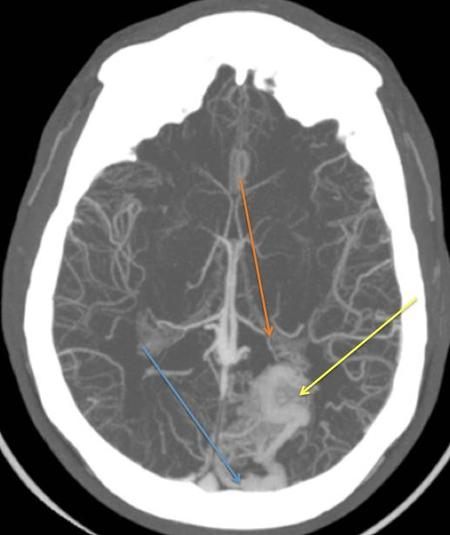
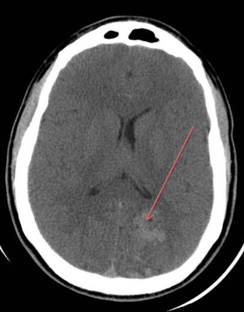
Q25
easy QID 37601
Correct
A key concept in magnetic resonance (MR) safety is the conceptual division of the MR site into zones, with progressive monitoring and restriction of entry into the higher-numbered, more controlled zones. To address these and other issues, the American College of Radiology (ACR) established a Blue Ribbon Panel on MR Safety, which developed and continues to update the ACR Guidance Document for Safe MR Practices. How many MR safety zones are defined by the American College of Radiology?
A1(0%)
B2(0%)
C3(1%)
D4(98%)
Your answerD
Correct answerD. 4
Vital Concept
The strong magnetic field of MR scanners produces unique safety issues in the imaging environment. The magnetic field is always on. While the patient is a major focus of safety efforts, the same issues apply to technologists, nurses, and physicians working regularly in the MR environment
Explanation
4
Four magnetic resonance imaging (MRI) safety zones are defined by the American College of Radiology (ACR). These zones, Zone I through Zone IV, are designed to progressively restrict access and increase safety controls as one moves closer to the MRI scanner. Zone I is freely accessible to the general public. Zone II serves as a supervised interface between public areas and the more restricted MRI environment. Zone III is strictly controlled due to the potential for serious injury from the magnetic field, and only screened, trained personnel and patients may enter. Zone IV is the MRI scanner room itself, where the magnetic field is strongest, and the risk of projectile and other MRI-related accidents is highest. This zoning system is a mandatory component of MRI safety programs and is central to the ACR’s recommendations for preventing MRI-related accidents and injuries.
Incorrect Answers:
A. B.C. These answers are incorrect as described above.
Vital Concept: The strong magnetic field of MR scanners produces unique safety issues in the imaging environment. The magnetic field is always on. While the patient is a major focus of safety efforts, the same issues apply to technologists, nurses, and physicians working regularly in the MR environment
Q26
easy QID 22618
Correct
A 15-month-old female patient presents for evaluation of fever and flank pain. The ureter is normal in caliber. Which of the following is the most likely diagnosis?
UPJ obstruction appears as a dilated renal pelvis with abrupt thinning at the ureteropelvic junction and calyceal dilatation. Parenchymal thinning and dysplasia may be associated. Ultrasound is the first-line examination, but CT provides more detailed evaluation of the ureteropelvic junction. Crossing vessels should be evaluated as a potential causative factor.
Explanation
Ureteropelvic junction (UPJ) obstruction
The ultrasound image shows a diffusely dilated renal collecting system including the renal pelvis (blue arrow). The CT image redemonstrates this finding, with evidence of parenchymal volume loss (green arrow – indicating a longstanding, chronic process). Ureteropelvic junction (UPJ) obstruction is the most common etiology of urinary tract obstruction in the pediatric population. The most common appearance is that of marked hydronephrosis that stops focally at the ureteropelvic junction. The ureter distal to the ureteropelvic junction is normal in caliber. On IVP, the typical appearance is that of delayed nephrograms with late excretion of contrast into the dilated renal pelvis. On nuclear medicine renal scintigraphy, the degree of obstruction is typically given by the time to half of peak activity within the renal pelvis. If t ½ is less than 10 min, it is deemed normal. If t ½ is greater than 20 min, obstruction is diagnosed. T ½ between 10 to 20 min is considered indeterminate. Ureteropelvic junction obstruction is thought to be related to abnormal innervation of the smooth muscle at the UPJ, abnormal smooth muscle at the UPJ, or a crossing vessel or scar at the UPJ. It is typically treated with pyeloplasty.
Incorrect Answers:
B. Posterior urethral valves are a form of chronic urethral obstruction seen only in male patients, due to the presence of abnormally fused valves within the posterior urethra. This produces the classic imaging appearance of the “keyhole” urinary bladder with an abnormally dilated posterior urethra. The valves may be seen as a focal linear filling defect within the posterior urethra. The best imaging modality for diagnosis is VCUG or MR urography. Obstruction may be severe enough to produce oligohydramnios in utero with associated pulmonary hypoplasia. Additionally, long-term renal failure can be seen if not appropriately treated. The typical treatment is an endoscopic ablation of the valve tissue during the neonatal period. This entity would cause bilateral hydronephrosis.
C. Vesicoureteral reflux (VUR) is a relatively common cause of hydronephrosis/hydroureter, related to abnormal retrograde urinary flow from the urinary bladder into the ureters. It is classically thought to be related to abnormally short or abnormally angulated ureteral insertion into the urinary bladder. It is frequently associated with pyelonephritis and chronic renal scarring. An internationally accepted reflux grading system has been developed for the purposes of standardizing reporting of reflux severity based on VCUG findings:
I: Reflux reaches the ureter but not the renal pelvis.
II: Reflux reaches the renal pelvis, with normal sharp renal calyces.
III: Calyces are mildly blunted.
IV: Calyces are moderately blunted, and the ureter is mildly dilated.
V: Ureter is markedly dilated, with marked calyceal blunting. Intrarenal reflux present VUR is typically treated with antibiotic prophylaxis, and if it fails to spontaneously resolve, surgical ureteral reimplantation may be performed. Alternatively, endoscopic injections at the ureteral insertion may be performed.
D. Ureteropelvic duplications are a relatively common cause of urinary tract obstruction in pediatric patients. They are typically characterized by the presence of two renal pelves and/or two ureters. The duplicated ureters may drain separately into the urinary bladder or join together at some point along their length. The drainage pattern is said to be governed by the Weigert-Meyer rule, which states that the upper pole moiety most frequently inserts ectopically inferomedial to the lower pole insertion and is more likely to obstruct. The lower pole moiety more frequently inserts normally and more frequently refluxes. The upper pole moiety may insert at any point along the distal genitourinary tract including the bladder, urethra, or vagina. If the ureter inserts at any point distal to the urinary sphincter, the patient will likely present with ongoing continuous urinary leakage. The upper pole moiety insertion is frequently associated with a ureterocele at its insertion, which is often the culprit of the urinary obstruction.
E. Multilocular cystic nephroma is a cystic renal mass which, when encountered in the pediatric population, is more common in male patients, although in adults it is far more common in females. In the pediatric population, it is most common between the ages of 3 months to 2 years. The typical appearance is that of a large multicystic mass with variably enhancing internal septations. They are typically benign masses that are usually treated with surgical resection, which is usually curative. However, the presence of immature elements (metanephric blastema) within the mass can confer the potential for aggressive behavior, leading to a lesion that carries a prognosis similar to that of Wilms' tumor.
Vital Concept: UPJ obstruction appears as a dilated renal pelvis with abrupt thinning at the ureteropelvic junction and calyceal dilatation. Parenchymal thinning and dysplasia may be associated. Ultrasound is the first-line examination, but CT provides more detailed evaluation of the ureteropelvic junction. Crossing vessels should be evaluated as a potential causative factor.
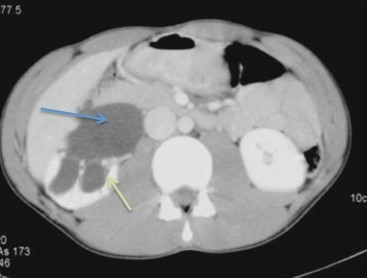
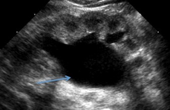
Q27
easy QID 61314
Correct
The majority of elderly patients will demonstrate incidental lung nodules on CT imaging. Both size and morphology play a role in risk stratification. Which of the following characteristics of a pulmonary nodule would be most suspicious for neoplasm?
APopcorn calcification(0%)
BSubsolid density(95%)
CCluster-like appearance(4%)
DPresence of fat(0%)
Your answerB
Correct answerB. Subsolid density
Explanation
Subsolid density
Studies have shown subsolid nodules have a greater propensity for malignancy compared to their solid counterparts. Previously referred to as bronchioloalveolar carcinoma, these subsolid appearing malignancies have been reclassified into subtypes of adenocarcinoma by the International Association for the Study of Lung Cancer (IASLC) into adenocarcinoma in situ, minimally invasive adenocarcinoma and invasive adenocarcinoma of lung. The Fleischner Society released guidelines in 2017 on the management of subsolid nodules based on size, composition (entirely versus partly subsolid), and multiplicity. Due to the slower growth of these subsolid nodules, follow-up is typically longer than solid nodules.
Incorrect Answers:
A. Popcorn calcification confers benignity, as does complete and central calcification.
C. When nodules demonstrate clustering or tree-in-bud configuration, they are most likely infectious or inflammatory in etiology rather than neoplastic.
D. The presence of fat is consistent with a benign entity, most likely a hamartoma.
Q28
hard QID 9577
Incorrect
Several axial and coronal images from a CT of the abdomen in a 48-year-old male who has acute onset of epigastric pain, nausea, and vomiting are presented here. Which of the following is the most likely diagnosis for the patient's acute symptoms?
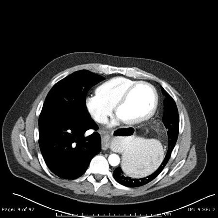
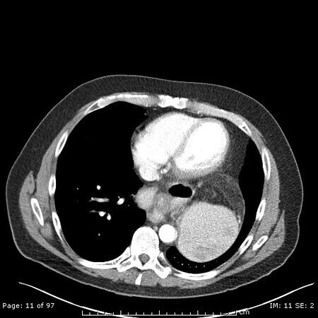
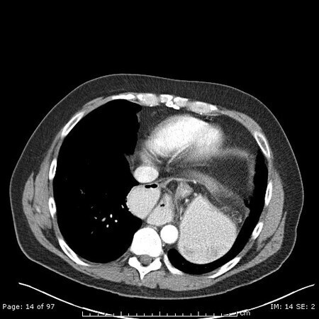
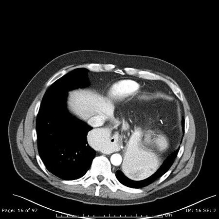
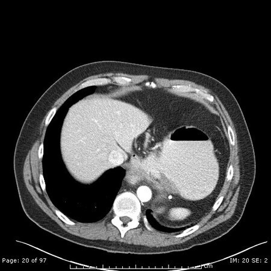
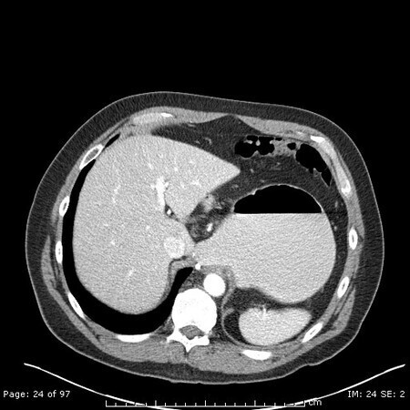
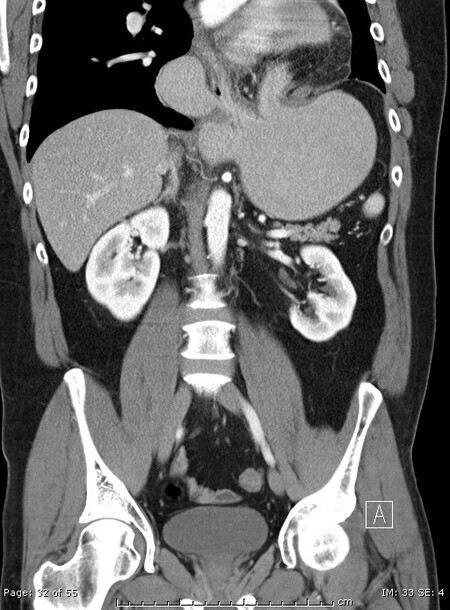
AOrgano-axial gastric volvulus(21%)
BType I hiatal hernia(1%)
CMesentero-axial gastric volvulus(56%)
DType III hiatal hernia(22%)
Your answerD
Correct answerC. Mesentero-axial gastric volvulus
Vital Concept
Mesentero-axial gastric volvulus involves stomach rotation along the mesenteroaxial plane perpendicular to the lesser-greater curvature line. The antrum and pylorus rotate upward and anteriorly. The key CT finding is antropyloric junction positioned superior and anterior to the gastroesophageal junction.
Explanation
Mesentero-axial gastric volvulus
Mesentero-axial gastric volvulus refers to the twisting of the stomach along an axis extending between the lesser and the greater curvatures of the stomach. The gastric pylorus flips superior to the gastric fundus. It is more common in the pediatric population (unlike this case) and more likely to be associated with obstruction and strangulation than the organo-axial volvulus. Similar to organo-axial gastric volvulus, it can be complete or incomplete. Plain radiographs can show two gastric bubbles in the chest, as seen below.
Incorrect Answers:
A. Organo-axial gastric volvulus refers to the twisting of the stomach along an axis that extends from the gastric cardia to the pylorus, in a left-to-right flip direction. More common in adults, it can be complete (180°) or incomplete (<180°) and can be associated with a para-esophageal hernia or trauma.
B. A type I hiatal hernia is the sliding hiatal hernia. This patient has a para-esophageal hernia in association with the mesentero-axial gastric volvulus, which is uncommon. The type of the hiatal hernia in this case is type III where there is herniation of both the GE junction and the gastric fundus in the mediastinum.
D. Even though this patient does have a type III hiatal hernia, it is not the most likely cause of the acute onset symptoms in this case.
Vital Concept: Mesentero-axial gastric volvulus involves stomach rotation along the mesenteroaxial plane perpendicular to the lesser-greater curvature line. The antrum and pylorus rotate upward and anteriorly. The key CT finding is antropyloric junction positioned superior and anterior to the gastroesophageal junction.
Q29
moderate QID 44033
Correct
Which of the following is the best sequence to distinguish zonal anatomy of the uterus?
AT1 pre contrast(8%)
BT1 post contrast(3%)
CT2 weighted imaging(88%)
DDiffusion weighted imaging(0%)
EGradient echo(1%)
Your answerC
Correct answerC. T2 weighted imaging
Vital Concept
T2-weighted MRI sequences are the gold standard for evaluating uterine zonal anatomy, showing the junctional zone as a distinct hypointense band separating the hyperintense endometrium from the intermediate-signal outer myometrium.
Explanation
T2 weighted imaging
Zonal anatomy is best seen with T2 weighted imaging. The endometrium (red arrow) will appear as high signal due to the presence of glandular tissue. Its thickness varies according to menstrual status, menopause, and with hormone replacement therapy. The junctional zone appears as dark signal (orange arrow) secondary to compact myometrial cells with a high nuclear/ cytoplasm ratio. Last, the myometrium is an intermediate signal (green arrow), similar to muscle.
Incorrect Answers:
A and E. The stratification is not well-seen on T1 or gradient echo sequences.
B. Following contrast administration there is typically avid endometrial enhancement. However, the distinction between the junctional zone and myometrium is not as well-appreciated.
D. Diffusion weighted imaging theoretically would show relatively higher signal in the compact and cellular junctional zone, though this is often not practical.
Vital Concept: T2-weighted MRI sequences are the gold standard for evaluating uterine zonal anatomy, showing the junctional zone as a distinct hypointense band separating the hyperintense endometrium from the intermediate-signal outer myometrium.
Q30
QID 20774
Correct
Which of the following statements regarding the lesion shown in the images is most accurate?
AThe peripheral type is the most common(5%)
BThe central type has higher association with DCIS(8%)
C60% upgrade to carcinoma upon excision(10%)
DMammography has a higher yield than ultrasonography(1%)
EThis lesion is often mammographically occult(76%)
Your answerE
Correct answerE. This lesion is often mammographically occult
Explanation
This lesion is often mammographically occult
This is a central type intraductal papilloma which can be mammographically occult.
Incorrect Answers:
A. Intraductal papilloma can be central (70 to 90%) or peripheral (10 to 30%). The central type is usually single in a large duct and presents with bloody nipple discharge. It is also usually mammographically occult. A central papilloma is shown in these images.
B. The peripheral type is usually multiple arising in the terminal ductal lobular unit (TDLU). They are more likely to be seen mammographically than the central type. The peripheral type has a higher association with radial sclerosing lesion, DCIS, ADH (atypical ductal hyperplasia), and invasive carcinoma.
C. Approximately 3% of excised papillomas without atypia will be upgraded to DCIS or ADH.
Q31
hard QID 21174
Incorrect
A 67-year-old man presents with hypotension, tachycardia, and bright red blood per rectum. An angiogram is performed. Which of the following is the source of bleeding?
ASuperior rectal artery(71%)
BMiddle rectal artery(8%)
CInferior rectal artery(19%)
DSigmoid branch(2%)
EInternal pudendal artery(1%)
Your answerC
Correct answerA. Superior rectal artery
Explanation
Superior rectal artery
In this case, the inferior mesenteric artery is being injected with demonstration of active contrast extravasation (red arrow) from a branch of the superior rectal artery (yellow arrow). The superior rectal artery is a branch of the inferior mesenteric artery (IMA), supplying the rectum in combination with the middle rectal artery (a branch of the internal iliac artery) and the inferior rectal artery (a branch of the internal pudendal artery).
Incorrect Answers:
B. The middle rectal artery arises as a branch of the internal iliac artery.
C. The inferior rectal artery arises as a branch of the internal pudendal artery to supply the anus.
D. Sigmoid branches of the IMA supply the sigmoid colon and arise from the IMA proximal to the superior rectal artery.
E. The internal pudendal artery is a branch of the internal iliac artery that courses through the greater sciatic foramen to supply perineum and external genitalia. It gives off the inferior rectal artery, which supplies the anus.
Q32
moderate QID 43782
Correct
A 26-year-old patient is playing basketball with friends when they roll their ankle. One week later they are still having significant pain and are referred for a magnetic resonance image (MRI). Which of the following is the most likely diagnosis?
The proton density image shows complete disruption of the fibers of the anterior talofibular ligament (ATFL – red arrow); note the intact posterior talofibular ligament (blue arrow) for comparison.
On the fat-saturated T2 image, one can see edema at the site of the ligament (yellow arrow). This is consistent with an acute to the subacute time frame (consistent with the provided history).
Incorrect Answers:
B. C. As discussed above, the ATFL is the most commonly injured ankle ligament sustained during ankle sprains. This is because it is the weakest ligament in the lateral collateral ligament complex, not the syndesmosis, which includes the anterior and posterior tibiofibular ligaments. Approximately two-thirds of ankle sprains are isolated ATFL injuries.
D. The second most commonly injured ankle ligament is the calcaneofibular ligament.
Q33
moderate QID 18050
Correct
What is the most likely cause for this appearance?
ABudd-Chiari syndrome(10%)
BAlcoholic cirrhosis(87%)
CHepatosplenic candidiasis(1%)
DAlcoholic pancreatitis(1%)
Your answerB
Correct answerB. Alcoholic cirrhosis
Vital Concept
Alcoholic cirrhosis on CT shows characteristic morphologic changes including right lobe atrophy with caudate/left lobe hypertrophy, surface nodularity, and portal hypertension findings of splenomegaly, varices, and collateral vessels. CT effectively identifies portosystemic shunts and assesses portal vein patency in decompensated disease.
Explanation
Alcoholic cirrhosis
The most common cause of cirrhosis (and subsequently, portal hypertension) in the United States is alcoholic cirrhosis. The findings of a nodular hepatic contour (blue arrow), caudate hypertrophy (red arrow), and a splenic varix (yellow arrow) should raise the suspicion for portal hypertension. Other common portosystemic collaterals that may be enlarged include coronary veins, esophageal varices, paraumbilical varices (caput medusae), abdominal wall, and splenorenal and gastrorenal varices.
Incorrect Answers:
A. Findings of Budd-Chiari syndrome include caudate lobe hypertrophy, relative hypoattenuation of the hepatic periphery, and nonvisualization of the hepatic veins.
C. Hepatosplenic candidiasis and other fungal infections may be seen in immunocompromised patients such as those with bone marrow transplants, HIV infection, and patients on chemotherapy, among others. Findings would include multiple rounded hypoattenuating lesions throughout the liver and spleen with an appropriate given history.
D. Pancreatitis can produce isolated gastric varices in the setting of splenic vein thrombosis, but what is seen here is dilatation and filling of the splenic vein with contrast.
Vital Concept: Alcoholic cirrhosis on CT shows characteristic morphologic changes including right lobe atrophy with caudate/left lobe hypertrophy, surface nodularity, and portal hypertension findings of splenomegaly, varices, and collateral vessels. CT effectively identifies portosystemic shunts and assesses portal vein patency in decompensated disease.
Q34
hard QID 43925
Correct
This patient’s infarction is primarily within what vascular territory?
ABasilar tip(0%)
BSuperior cerebellar artery(60%)
CPosterior cerebral artery(1%)
DAnterior inferior cerebellar artery(25%)
EPosterior inferior cerebellar artery(13%)
Your answerB
Correct answerB. Superior cerebellar artery
Explanation
Superior cerebellar artery
These images through the posterior fossa show restricted diffusion in the superior aspect of the cerebellar hemisphere and superior vermis. Vascular territories of the cerebellum are as depicted in the image, and in color at the link provided below in the Reference section.
Q35
hard QID 5120
Correct
Which of the following is true regarding dynamic range (ultrasound)?
ASmaller dynamic range results in "smoother" images.(8%)
BResolution is highest with a small dynamic range.(11%)
CLow-contrast lesions are best seen with a small dynamic range.(52%)
DDepth of penetration is increased with a higher dynamic range.(13%)
EDepth of penetration is decreased with a higher dynamic range.(15%)
Your answerC
Correct answerC. Low-contrast lesions are best seen with a small dynamic range.
Vital Concept
A lower dynamic range increases contrast in ultrasound but produces images with a coarser appearance.
Explanation
Low-contrast lesions are best seen with a small dynamic range.
Low contrast lesions are best seen at a low dynamic range because it increases the image contrast. A low dynamic range compresses the wide spectrum of received echo signals into fewer shades of gray, making the subtle differences in echogenicity between the lesion and its surrounding tissue appear more distinct as a starker black-and-white presentation. This accentuates subtle variations that might blend together and be missed with a high dynamic range's softer, more nuanced gray scale.
Incorrect Answers:
A. A higher dynamic range results in less contrast, but a smoother-appearing image.
B. D. E. Dynamic range has no effect on resolution or depth of penetration.
Vital Concept: A lower dynamic range increases contrast in ultrasound but produces images with a coarser appearance.
Q36
QID 22638
Correct
A 10-year-old female patient presents for evaluation of an abnormality incidentally noted on chest radiography. Which of the following is the diagnosis?
APulmonary sequestration(8%)
BScimitar syndrome(1%)
CBronchogenic cyst(91%)
DCentrilobular emphysema(0%)
EParaseptal emphysema(0%)
Your answerC
Correct answerC. Bronchogenic cyst
Vital Concept
Bronchogenic cyst appears as a fluid-attenuation ovoid or round structure with a thin wall in the visceral mediastinum. Internal fluid may show higher attenuation if proteinaceous content, hemorrhage, or debris is present. Wall thickening and internal air suggest superimposed infection.
Explanation
Bronchogenic cyst
Bronchogenic cysts are abnormal cystic dilatations along the airway related to defective foregut formation. They are lined with respiratory epithelium but are not connected with the airway. They typically appear as middle and posterior mediastinal masses that are cystic in appearance with internal fluid or soft tissue density material (blue arrow). They may have calcification within their walls. They only very rarely demonstrate malignant transformation and may be treated with observation. However, they may become infected and require drainage or surgical resection.
Incorrect Answers:
A. Pulmonary sequestrations are congenital pulmonary malformations in which a portion of the lung does not connect to the bronchial tree or pulmonary arteries. They may be classified as intralobar or extralobar. Extralobar sequestrations possess their own pleural coverings and are fed by a systemic artery with systemic venous drainage. Intralobar sequestrations typically do not possess their own pleural coverings. They are fed by a systemic artery but typically possess pulmonary venous drainage. They commonly present with recurrent infections.
B. Hypogenetic lung syndrome is also known as scimitar syndrome and is characterized by the scimitar triad consisting of right lung hypoplasia, the anomalous connection of the right inferior pulmonary vein to the inferior vena cava (scimitar vein), and systemic arterial supply to the right lower lobe. The anomalous venous drainage of the right lower lung is curved and is said to resemble a Turkish scimitar when imaged on radiography or in the coronal plane.
D. Centrilobular emphysema is typically associated with smoking or noxious inhalation and is characterized by a low-density appearance of the pulmonary parenchyma within the center of the secondary pulmonary lobule.
E. Paraseptal emphysema is also associated with smoking or noxious inhalation. It is characterized by the presence of decreased density within the pulmonary parenchyma along pleural surfaces, such as at the periphery of the lung and along interlobar fissures.
Vital Concept: Bronchogenic cyst appears as a fluid-attenuation ovoid or round structure with a thin wall in the visceral mediastinum. Internal fluid may show higher attenuation if proteinaceous content, hemorrhage, or debris is present. Wall thickening and internal air suggest superimposed infection.
Q37
moderate QID 2940
Correct
A patient presents to the emergency room 30 minutes after a whole-body radiation exposure in an industrial accident. He was experiencing vomiting and diarrhea during the 10-minute drive to the hospital, for which he is receiving fluid resuscitation. Which of the following best categorizes his expected outcome?
AMild transient lymphopenia with full recovery(4%)
BSevere transient bone marrow suppression with full recovery after isolation and infection monitoring(8%)
CSevere transient bone marrow suppression, but will be expected to have permanent sterility and cataracts(6%)
DPermanent bone marrow suppression with full recovery after bone marrow transplant(1%)
EThe patient will most probably die(81%)
Your answerE
Correct answerE. The patient will most probably die
Vital Concept
Whole body dose >10 Gy with nausea/vomiting onset within 10 minutes indicates a very poor prognosis. The timing of prodromal symptoms in acute radiation syndrome directly correlates with survival—earlier onset means worse prognosis, with symptom onset <10 minutes representing overwhelming radiation injury most likely incompatible with survival.
Explanation
The patient will most probably die
The abrupt onset of vomiting and diarrhea suggests a dose in excess of 10 Gy. This is almost universally fatal despite aggressive medical care. The time to onset of vomiting and diarrhea has a positive correlation with dose. Onset within minutes of exposure suggests a supralethal dose.
Incorrect Answers:
A. Early transient lymphopenia can be seen with doses as low as 0.5 Gy, but full marrow suppression and hematopoietic syndrome typically appears > 2 Gy. While the patient would certainly have hematopoietic syndrome, his condition is much worse. The abrupt onset of vomiting and diarrhea suggests a dose in excess of 10 Gy.
B. The full hematopoietic syndrome typically appears at doses > 2 Gy. While the patient would certainly have hematopoietic syndrome, his condition is much worse. The abrupt onset of vomiting and diarrhea suggests a dose in excess of 10 Gy. This is almost universally fatal despite aggressive medical care.
C. While the patient will experience full hematopoietic syndrome (dose > 2 Gy) and did have a dose higher than the level for formation of cataracts (0.5 Gy) and permanent sterility (5 Gy), his condition is much worse. The abrupt onset of vomiting and diarrhea suggests a dose in excess of 10 Gy.
D. While the patient will experience full hematopoietic syndrome (dose > 2 Gy), his condition is much worse. The abrupt onset of vomiting and diarrhea suggests a dose in excess of 10 Gy. The benefit of bone marrow transplant for hematopoietic syndrome is unclear; however, the patient will most likely die due to the gastrointestinal syndrome.
Vital Concept: Whole body dose >10 Gy with nausea/vomiting onset within 10 minutes indicates a very poor prognosis. The timing of prodromal symptoms in acute radiation syndrome directly correlates with survival—earlier onset means worse prognosis, with symptom onset <10 minutes representing overwhelming radiation injury most likely incompatible with survival.
Q38
moderate QID 2702
Incorrect
Which of the following breast cancers is most likely to be mammographically occult?
AMedullary carcinoma(7%)
BTubular carcinoma(9%)
CInvasive ductal carcinoma(5%)
DInvasive lobular carcinoma(79%)
Your answerB
Correct answerD. Invasive lobular carcinoma
Vital Concept
Invasive lobular carcinoma is often mammographically occult.
Explanation
Invasive lobular carcinoma
Invasive lobular carcinoma (ILC) is the second most common type of invasive breast cancer (invasive breast cancer of no special type is most common). Invasive lobular carcinoma is more often multicentric and bilateral, necessitating imaging of the contralateral breast. ILC is often mammographically occult with a false-negative rates of ~20% or higher described in the literature.
Incorrect Answers:
A. Medullary carcinoma is reliably seen on mammography, usually circular or oval in shape with circumscribed or ill-defined margins, usually with associated calcifications less likely.
B. Tubular carcinoma is also well seen on mammography, often as a small (<1 cm) spiculated mass. These can be seen with or without calcification.
C. Invasive ductal carcinoma often presents on mammogram as an irregular spiculated mass with amorphous or pleomorphic calcifications.
Vital Concept: Invasive lobular carcinoma is often mammographically occult.
Q39
hard QID 41449
Correct
A 58-year-old patient is undergoing a PET CT for lymphoma and is accompanied by their partner. The partner asks if they can be present in the imaging room while the patient is undergoing their scan. The physician tells their partner that this is not possible because the NRC considers it a restricted area. What is the dose limit to a member of the general public above which for an area to be categorized as restricted?
A1 mrem/ hr(17%)
B2 mrem/ hr(71%)
C3 mrem/ hr(4%)
D4 mrem/ hr(0%)
E5 mrem/ hr(8%)
Your answerB
Correct answerB. 2 mrem/ hr
Explanation
2 mrem/ hr
For regulatory purposes, areas in a typical nuclear medicine department are considered to be either restricted or unrestricted. To properly control public dose, licensed material must be secured to prevent unauthorized access or use by individuals coming into the area. Restricted areas are those to which access is limited by the licensee for the purpose of protecting individuals against unnecessary risks from exposure to radiation and radioactive materials. An area where a member of the general public could receive at least 100 mrems per year or 2 mrems per hour is considered restricted. Examples of typical restricted areas include the hot lab, imaging rooms, thyroid uptake room, supply areas, procedure areas, shipping, and receiving areas. Unrestricted areas are those areas to which access is neither limited nor controlled and generally include the reception area, file room, waiting room, physician office, chief technologist office, hallways, and bathroom.
Q40
easy QID 3068
Correct
This 30-year-old male patient presented with pain in the scrotum. Which of the following is the diagnosis based on these images of scrotal sonography performed during Valsalva with diameters of tubular structures seen of greater than 3 mm?
AHydrocele(1%)
BSpermatocele(0%)
CVaricocele(97%)
DAV malformation(1%)
ETesticular mass(1%)
Your answerC
Correct answerC. Varicocele
Vital Concept
Varicoceles require upright position with Valsalva maneuver to demonstrate venous diameter greater than 3 mm and reflux of more than 2 seconds duration (not shown here). Varicoceles are associated with male infertility.
Explanation
Varicocele
This is a grade 3 varicocele of the left scrotum. The veins of the pampiniform plexus measure more than 3 mm on Valsalva maneuver. This is abnormal and suggests pathological dilation of these veins. Varicocele is a frequent cause of scrotal pain and more importantly, one of the main causes of male infertility.
Incorrect Answers:
A. This scan does not reveal any significant hydrocele.
B. Spermatoceles are typically unilocular extratesticular cysts.
D. There is no evidence of arteriovenous malformation in these images.
E. No evidence of scrotal masses is present.
Vital Concept: Varicoceles require upright position with Valsalva maneuver to demonstrate venous diameter greater than 3 mm and reflux of more than 2 seconds duration (not shown here). Varicoceles are associated with male infertility.
Q41
hard QID 41452
Incorrect
While in the nuclear medicine department, a physician see a package with the label shown. Which of the following is the maximum surface radiation level?
A0 mrem/hr(5%)
B0.5 mrem/hr(77%)
C1 mrem/hr(12%)
D2 mrem/hr(3%)
E5 mrem/hr(4%)
Your answerE
Correct answerB. 0.5 mrem/hr
Explanation
0.5 mrem/hr
The image provided shows a White I radioactive label. Labels are used to visually indicate the type of hazard and the level of hazard contained in a package. Labels rely principally on symbols to indicate the hazard. Although the package required for transporting radioactive material is based on the activity inside the package, the label required on the package is based on the radiation hazard outside the package. Radioactive material is the only hazardous material that has three possible labels, depending on the relative radiation levels external to the package. Also, labels for radioactive material are the only ones that require the shipper to write some information on the label. The information is a number called the Transport Index (TI), which, in reality, is the highest radiation level at 1 meter from the surface of the package. The three labels are commonly called White I, Yellow II, and Yellow III, referring to the color of the label and the Roman numeral prominently displayed. A specific label is required if the surface radiation limit and the limit at 1 meter satisfy the requirements detailed in the chart below.
table:
rowgroup:
row "Label Surface Radiation Level Radiation Level at 1 Meter":
Label
Surface Radiation Level
Radiation Level at 1 Meter
row "White I Does not exceed 0.5 mrem/hr Not applicable":
cell "White I"
cell "Does not exceed 0.5 mrem/hr"
cell "Not applicable"
row "Yellow II Does not exceed 50 mrem/hr AND Does not exceed 1 mrem/hr":
cell "Yellow II"
cell "Does not exceed 50 mrem/hr"
cell "AND"
cell "Does not exceed 1 mrem/hr"
row "Yellow III Exceeds 50 mrem/hr OR Exceeds 1 mrem/hr":
cell "Yellow III"
cell "Exceeds 50 mrem/hr"
cell "OR"
cell "Exceeds 1 mrem/hr"
Q42
moderate QID 20602
Correct
The finding in the obstetric ultrasound for single pregnancy shown below would cause concern for which of the following?
AFetal anemia(4%)
BCongenital amputations(87%)
CRenal agenesis(5%)
DCardiac abnormalities(3%)
ECongenital blindness(1%)
Your answerB
Correct answerB. Congenital amputations
Vital Concept
Amniotic band syndrome (ABS) comprises a wide spectrum of abnormalities, all of which result from entrapment of various fetal body parts in a disrupted amnion. Due to the randomness of entrapment, deficits are variable but frequently involve the limbs.
Explanation
Congenital amputations
Amniotic band syndrome is an uncommon congenital pathological condition that leads to malformations and can result in fetal or infant death. It results when the fetus enters the chorionic cavity as a result of amnion disruption and fetal body parts become entrapped in strands from the chorionic amnion.
The ultrasound shown reveals echogenic lines in the amniotic fluid consistent with amniotic bands. Features depend upon the trapped body part and the stage of development when it is entrapped. Phenotypic features of stillborn cases can include craniofacial clefting, thoracoabdominoschisis, amputation, ring constriction, amniotic band adhesion, placental adhesions, and internal malformations. Prognosis depends upon the defect. Limb defects are most common, with limb amputation, clubfoot, distal atrophy, lymphhedema, and pseudosyndactyly.
Incorrect Answers:
A. Ultrasound can detect signs of fetal heart failure and hydrops caused by anemia. Ultrasound is also used to measure the speed of blood flow in the middle cerebral artery (MCA) of the fetal brain, another possible indicator. In a fetus with anemia, the blood flows to the brain at a faster rate.
C. Renal agenesis is often detected on fetal ultrasound, where features include an absent kidney, absence of the ipsilateral renal artery, and, in cases of bilateral renal agenesis, oligohydramnios or anhydramnios and non-visualization of the bladder. Bilateral renal agenesis is fatal, although children with unilateral renal agenesis may be asymptomatic.
D. Fetal cardiac anomalies are common, with half of them being lethal or requiring complex surgeries. Early detection of these anomalies enables early referral to tertiary care centers with adequate expertise. A routine antenatal ultrasound performed between 18 and 22 weeks enables detection of most of these malformations. Further comprehensive evaluation can be performed with a dedicated fetal echocardiography, particularly in high-risk pregnancies and in cases with extracardiac anomalies.
E. The normal lens appears on the coronal ultrasonic facial view as a smooth, hyperechogenic circular line with a hypoechogenic content. In the axial view of the fetal head and orbits, the lenses are visualized as a pair of small dotted echoes originating from their near and far margins. The finding of bilateral congenital cataracts in the fetus is rare.
Vital Concept: Amniotic band syndrome (ABS) comprises a wide spectrum of abnormalities, all of which result from entrapment of various fetal body parts in a disrupted amnion. Due to the randomness of entrapment, deficits are variable but frequently involve the limbs.
Q43
moderate QID 63862
Correct
A first trimester ultrasound was performed and revealed the structure indicated by the arrow. What is the next step?
ACall the obstetrician immediately(3%)
BCall the obstetrician the same day(5%)
CRecommend serial beta-HCG and follow up ultrasound in one week(14%)
DNo recommendations(79%)
Your answerD
Correct answerD. No recommendations
Explanation
No recommendations
The structure depicted by the arrow is the normal rhombencephalon. This becomes the 4th ventricle after 11 weeks and appears as an anechoic fluid structure at about 8-10 weeks. As this is a normal anatomic finding, calling the obstetrician or recommending further testing is not needed.
Q44
moderate QID 38069
Correct
A primary care physician wishes to order a lumbar spine MRI on a 55-year-old female with 3 weeks of lower back pain and no history of trauma or malignancy. According to the ACR appropriateness criteria, this is a "usually not appropriate" indication for this study and should receive which of the following ratings?
A0(1%)
B1 to 3(87%)
C4 to 6(10%)
D7 to 9(2%)
E10(0%)
Your answerB
Correct answerB. 1 to 3
Vital Concept
The ACR appropriateness criteria are based on clinical conditions and associated modifiers. Each clinical condition includes three variants based on patient factors and symptoms. For each variant, each possible imaging modality is rated on a 1 (low) to 9 (high) scale based on the appropriateness of the modality for the variant under discussion.
Explanation
1 to 3
Explanation:
In this case, lower back pain is the symptom, and the duration and pertinent history (no history of trauma or malignancy) are the modifiers. Each clinical condition includes three variants based on patient factors and symptoms. For each variant, each possible imaging modality is rated on a 1 (low) to 9 (high) scale based on the appropriateness of the modality for the variant under discussion. These ratings are determined by the expert panel using a process known as the Modified Delphi Technique, which attempts to reach consensus of the panel members through serial rounds of anonymous voting. Ratings of 1 to 3 are defined as “usually not appropriate,” 4 to 6 as “may be appropriate,” and 7 to 9 as “usually appropriate.” The panel may also indicate, if needed, that there was “no consensus.” It is important to remember that the ratings refer to the appropriateness of an imaging modality for the initial imaging examination based on the variant.
Incorrect Answers:
A. E. Scores of 0 and 10 are not used.
C. 4 to 6 as “may be appropriate,”
D. 7 to 9 as “usually appropriate.”
Vital Concept: The ACR appropriateness criteria are based on clinical conditions and associated modifiers. Each clinical condition includes three variants based on patient factors and symptoms. For each variant, each possible imaging modality is rated on a 1 (low) to 9 (high) scale based on the appropriateness of the modality for the variant under discussion.
Q45
hard QID 4955
Correct
A patient being evaluated for chest pain and arrhythmia undergoes cardiac magnetic resonance image (MRI). Based on the pattern of myocardial enhancement what is the most likely diagnosis?
ACardiac amyloidosis(61%)
BCardiac sarcoidosis(11%)
CMyocardial infarction(8%)
DMyocarditis(15%)
EHypertrophic cardiomyopathy(4%)
Your answerA
Correct answerA. Cardiac amyloidosis
Vital Concept
Cardiac amyloidosis demonstrates characteristic global subendocardial or transmural late gadolinium enhancement in a non-coronary distribution.
Explanation
Cardiac amyloidosis
Images demonstrate a pattern of diffuse transmural (with subendocardial involvement) delayed enhancement involving the bilateral ventricles and atria not confined to a vascular distribution (first four images) with additional patchy areas with subendocardial sparing but otherwise involving most of the interventricular myocardium (final image), most compatible with cardiac amyloidosis. Additional features include diffuse myocardial thickening and clinical findings of restrictive cardiomyopathy.
Incorrect Answers:
B. Cardiac involvement of sarcoidosis is variable in appearance by MRI, but typically displays patchy delayed enhancement in a sub-epicardial or mid-myocardial pattern.
C. While there are findings of delayed sub-endocardial enhancement in this case, the pattern is diffuse rather than corresponding to a specific vascular distribution.
D. Myocarditis typically demonstrates patchy sub-epicardial or mid-myocardial delayed enhancement, frequently involving the lateral wall of the left ventricle.
E. Hypertrophic cardiomyopathy typically demonstrates mesocardial delayed enhancement limited to the mid-interventricular septum. Additional findings would include abnormally thickened myocardium in the left ventricle, either diffuse or focal.
Vital Concept: Cardiac amyloidosis demonstrates characteristic global subendocardial or transmural late gadolinium enhancement in a non-coronary distribution.
Q46
moderate QID 37433
Correct
Which of the following correctly states the Bi-RADS classifications of the screening mammogram calcifications of the breast shown below? Patient endorses a history of trauma to the area in question.
ABI-RADS 0(9%)
BBI-RADS 1(1%)
CBI-RADS 2(85%)
DBI-RADS 3(3%)
EBI-RADS 4(1%)
Your answerC
Correct answerC. BI-RADS 2
Vital Concept
Post-traumatic lesions with small round, occasionally lucent-centered calcifications represent fat necrosis from blunt trauma - benign finding that appears as oil cysts or dystrophic calcifications but can occasionally mimic malignancy.
Explanation
BI-RADS 2
Some of these round calcifications can be seen in association with lucent centered masses with thin peripheral (eggshell) calcifications (red arrow). These represent oil cysts and are a benign response to prior trauma or surgery. As such, they should receive a Bi-RADS 2 designation.
Incorrect Answers:
A. Bi-RADS 0 indicates an incomplete exam in which additional imaging is required.
B. Bi-RADS 1 indicates a normal exam. Though benign, the image shown here is not considered a normal finding.
D. Bi-RADS 3 indicates a probable benign finding for which short interval follow-up is recommended. This should have a less than 2% chance of malignancy.
E. Bi-RADS 4 indicated a suspicious finding for which biopsy should be considered. This is a broad category that spans from 2-95% chance of malignancy. This is further broken down into categories 4A, 4B, and 4C.
Vital Concept: Post-traumatic lesions with small round, occasionally lucent-centered calcifications represent fat necrosis from blunt trauma - benign finding that appears as oil cysts or dystrophic calcifications but can occasionally mimic malignancy.
Q47
moderate QID 49054
Correct
Which of the following is correct with respect to medical event reporting?
ARegulator (state or NRC) must be notified in writing within 24 hours.(10%)
BOrdering doctor notification is optional.(2%)
CThe referring physician in addition to the individual who is the subject of the medical event must be notified within 24 hours, unless the referring physician agrees to personally inform the individual.(78%)
DRegulator must be notified in writing within 30 days.(11%)
Your answerC
Correct answerC. The referring physician in addition to the individual who is the subject of the medical event must be notified within 24 hours, unless the referring physician agrees to personally inform the individual.
Vital Concept
NRC medical event reporting requires telephone notification to NRC Operations Center within the next calendar day, written report to NRC Regional Office within 15 days, and patient/referring physician notification within 24 hours of discovery.
Explanation
The referring physician in addition to the individual who is the subject of the medical event must be notified within 24 hours, unless the referring physician agrees to personally inform the individual.
According to the NRC, “The licensee shall provide notification of the event to the referring physician and also notify the individual who is the subject of the medical event no later than 24 hours after its discovery.” Remember that non-agreement states have two sets of regulators (NRC and state) whereas agreement states have only the state regulator.
Incorrect Answers:
A. “The licensee shall submit a written report to the appropriate NRC Regional Office listed in... this chapter within 15 days after the discovery of the medical event.”
B. “The licensee shall provide notification of the event to the referring physician.”
D. “The licensee shall notify by telephone the NRC Operations Center no later than the next calendar day after discovery of the medical event.”
Vital Concept: NRC medical event reporting requires telephone notification to NRC Operations Center within the next calendar day, written report to NRC Regional Office within 15 days, and patient/referring physician notification within 24 hours of discovery.
Q48
easy QID 20585
Correct
A 46-year-old female patient presents to the orthopedic clinic with chronic back pain. Which of the following components of the vertebra is primarily involved in the abnormal finding below?
AVertebral body(0%)
BLamina(0%)
CPedicle(1%)
DPars interarticularis(98%)
ESpinous process(0%)
Your answerD
Correct answerD. Pars interarticularis
Vital Concept
Spondylolysis is a defect in the pars interarticularis, which is the portion of the neural arch connecting the superior and inferior articular facets. It occurs in approximately 5% of the population and is usually found at the L5 level. CT scan is the preferred imaging technique for adults with MRI recommended as first-line in adolescents.
Explanation
Pars interarticularis
Incorrect Answers:
A. B.C.E. There are no abnormal findings seen in the vertebral body, lamina, pedicle or spinous process. There is spondylolysis and fracture of pars interarticularis on x-ray.
Vital Concept: Spondylolysis is a defect in the pars interarticularis, which is the portion of the neural arch connecting the superior and inferior articular facets. It occurs in approximately 5% of the population and is usually found at the L5 level. CT scan is the preferred imaging technique for adults with MRI recommended as first-line in adolescents.
Q49
easy QID 43901
Correct
Which of the following would represent the most worrisome differential diagnostic consideration regarding this 18-year-old male patient with heel pain?
ASimple bone cyst(2%)
BGiant cell tumor(8%)
CTelangiectatic osteosarcoma(87%)
DOsteoblastoma(2%)
Your answerC
Correct answerC. Telangiectatic osteosarcoma
Vital Concept
Telangiectatic osteosarcoma is a malignant osteogenic tumor. It has a very similar presentation to ABC, which is a non-malignant tumor. Telangiectatic osteosarcoma will have fluid-fluid levels, expansile lesion, and often the cortex is compromised. A histological analysis is needed to differentiate (malignant cells).
Explanation
Telangiectatic osteosarcoma
The computed tomography (CT) scan shows a lytic, expansile lesion in the posterior calcaneus with areas of high (yellow arrow) and low (green arrow) density within, as well as areas of near-complete cortical erosion (orange arrow). The sagittal fat-saturated T2-weighted MR shows an expansile lesion in the posterior calcaneus with numerous cystic spaces and fluid-fluid levels (blue arrow) as well as surrounding marrow edema (red arrow). The imaging features are most suggestive of an aneurysmal bone cyst (ABC), of which the most important differential consideration is telangiectatic osteosarcoma.
An ABC is a relatively common benign lesion, which is most often treated with surgical curettage, whereas telangiectatic osteosarcoma is much rarer, and carries a different treatment and prognosis. These two entities can appear very similar on both radiographs and MR, with features such as an eccentric, metaphyseal location with mostly geographic borders and fluid-fluid levels. Telangiectatic osteosarcoma may have a greater degree of aggressiveness, with incomplete margins, a small area of cortical breakthrough, and a solid, soft tissue component. The distinction is not always clear: even though there are some aggressive features in this case (cortical erosion), this turned out to be an ABC.
ABCs may arise as primary lesions (~70%) or may secondarily arise in a preexisting tumor that has sustained trauma, such as a chondroblastoma, giant cell tumor, osteoblastoma, or simple bone cyst. In these instances, the possibility of malignant potential has less bearing on the treatment, which would still be curettage.
Incorrect Answers:
A. Simple bone cyst/Unicameral bone cyst is a benign tumor that is characterized often by a "fallen leaf sign" which is a cortical fragment within a lytic well-demarcated lesion. The lesion does not have fluid-fluid levels.
B. Giant cell tumor is a benign tumor that is characterized by eccentric lytic lesion which can extend to the epiphysis. The lesion can have fluid-fluid levels in the setting of concomitant ABC development.
D. Osteoblastoma is a benign tumor that is characterized by a radiolucent nidus (>2cm) within a lytic lesion. The lesion does not have fluid-fluid levels.
Vital Concept: Telangiectatic osteosarcoma is a malignant osteogenic tumor. It has a very similar presentation to ABC, which is a non-malignant tumor. Telangiectatic osteosarcoma will have fluid-fluid levels, expansile lesion, and often the cortex is compromised. A histological analysis is needed to differentiate (malignant cells).
Q50
hard QID 22616
Incorrect
A 12-year-old male patient presents with a palpable flank mass. Which of the following is the most likely diagnosis?
ANeuroblastoma(15%)
BMesoblastic nephroma(11%)
CNephroblastomatosis(3%)
DRenal cell carcinoma(59%)
Your answerC
Correct answerD. Renal cell carcinoma
Vital Concept
Pediatric RCC is extremely rare and typically occurs in periadolescent children. It appears as a solid mass with hemorrhage, necrosis, calcification, or cystic degeneration on CT. It cannot be distinguished from Wilms tumor on imaging alone. Bilateral RCC or occurrence in younger children suggests von Hippel-Lindau syndrome.
Explanation
Renal cell carcinoma
The single contrast-enhanced CT shows a heterogeneous and enhancing right renal mass (blue arrow) with a rim of normal renal tissue indicative of the "claw sign" (red arrow). While their imaging characteristics mimic those of Wilms' tumor, renal cell carcinomas become more common in the teen and pre-teen age group as the incidence of Wilms' tumor declines dramatically after the age of 8.
Renal cell carcinomas in the pediatric population have similar imaging and clinical characteristics to those in the adult population, often producing an exophytic cortically-based enhancing mass. It may also arise from cortical cysts, especially when they are noted to possess thickened, enhancing septae or mural nodularity. In pediatric imaging, it is always important to consider the age of the patient when providing a differential diagnosis.
Incorrect Answers:
A. Neuroblastomas are common malignant lesions in the pediatric population and frequently involve the adrenal medulla, retroperitoneum, or mediastinum. They are most commonly encountered in patients less than two years old (in contradistinction to Wilms' tumor, which peaks at age 3). Neuroblastomas are heterogeneous in appearance owing to internal hemorrhage and necrosis, with typical internal calcification. They are usually hyperintense on T2-weighted imaging and hypointense on T1-weighted imaging with heterogeneous enhancement. In contradistinction to Wilms' tumor, they tend to engulf adjacent vascular structures rather than exerting a mass effect upon them. They frequently metastasize to bones and liver. They may be imaged with a Tc99m bone scan and MIBG scintigraphy for evaluation of metastatic extent.
The staging of neuroblastoma is unique, as follows:
Stage 1—tumor confined to the initial organ
Stage 2—tumor extends beyond organ but not across the midline
Stage 3—tumor crosses the midline
Stage 4—distant metastasis
Stage 4S—metastasis to the skin, liver, and bone marrow in a patient less than one year of age. This is an important distinction to make, as the survival expectancy in this stage is almost 100% and may spontaneously resolve
B. Mesoblastic nephroma is a typically benign tumor of neonates composed primarily of fibroblasts. It is best characterized as a unilateral intrarenal solid tumor with variable internal cystic necrosis, hemorrhage, and enhancement in a neonatal patient. It may be indistinguishable from Wilms' tumor, but the age of the patient should suggest the diagnosis over Wilms' tumor. They are usually resected surgically, which is typically curative.
C. Nephroblastomatosis is a form of persistent metanephric blastema in pediatric patients. It is characterized as diffuse nephrogenic rests within the renal parenchyma and is typically seen as a homogeneous rind of renal masses that surround the kidney or are dispersed within the renal parenchyma. This rind of tissue tends to enhance to a lesser degree than that seen in the remainder of the normal kidney. It is most frequently encountered during the period of infancy and may degenerate into Wilms' tumor. Therefore, regular surveillance for an increase in size or the development of heterogeneity is important, as this finding could signal conversion to Wilms' tumor.
Vital Concept: Pediatric RCC is extremely rare and typically occurs in periadolescent children. It appears as a solid mass with hemorrhage, necrosis, calcification, or cystic degeneration on CT. It cannot be distinguished from Wilms tumor on imaging alone. Bilateral RCC or occurrence in younger children suggests von Hippel-Lindau syndrome.